Chapter 14: Antimicrobial Drugs¶
Introduction¶
In nature, some microbes produce substances that inhibit or kill other microbes that might otherwise compete for the same resources. Humans have successfully exploited these abilities, using microbes to mass-produce substances that can be used as antimicrobial drugs. Since their discovery, antimicrobial drugs have saved countless lives, and they remain an essential tool for treating and controlling infectious disease. But their widespread and often unnecessary use has had an unintended side effect: the rise of multidrug-resistant microbial strains. In this chapter, we will discuss how antimicrobial drugs work, why microbes develop resistance, and what health professionals can do to encourage responsible use of antimicrobials.
14.1 History of Chemotherapy and Antimicrobial Discovery¶
Learning Objectives
By the end of this section, you will be able to:
- Compare and contrast natural, semisynthetic, and synthetic antimicrobial drugs
- Describe the chemotherapeutic approaches of ancient societies
- Describe the historically important individuals and events that led to the development of antimicrobial drugs
Clinical Focus: Part 1
Marisa, a 52-year-old woman, was suffering from severe abdominal pain, swollen lymph nodes, fatigue, and a fever. She had just returned home from visiting extended family in her native country of Cambodia. While abroad, she received medical care in neighboring Vietnam for a compressed spinal cord. She still had discomfort when leaving Cambodia, but the pain increased as her trip home continued and her husband drove her straight from the airport to the emergency room.
Her doctor considers whether Marisa could be suffering from appendicitis, a urinary tract infection (UTI), or pelvic inflammatory disease (PID). However, each of those conditions is typically preceded or accompanied by additional symptoms. He considers the treatment she received in Vietnam for her compressed spinal cord, but abdominal pain is not usually associated with spinal cord compression. He examines her health history further.
- What type of infection or other condition may be responsible?
- What type of lab tests might the doctor order?
Jump to the next Clinical Focus box.
Most people associate the term chemotherapy with treatments for cancer. However, chemotherapy is actually a broader term that refers to any use of chemicals or drugs to treat disease. Chemotherapy may involve drugs that target cancerous cells or tissues, or it may involve antimicrobial drugs that target infectious microorganisms. Antimicrobial drugs typically work by destroying or interfering with microbial structures and enzymes, either killing microbial cells or inhibiting their growth. But before we examine how these drugs work, we will briefly explore the history of humans’ use of antimicrobials for the purpose of chemotherapy.
Use of Antimicrobials in Ancient Societies¶
Although the discovery of antimicrobials and their subsequent widespread use is commonly associated with modern medicine, there is evidence that humans have been exposed to antimicrobial compounds for millennia. Chemical analyses of the skeletal remains of people from Nubia2 (now found in present-day Sudan) dating from between 350 and 550 AD have shown residue of the antimicrobial agent tetracycline in high enough quantities to suggest the purposeful fermentation of tetracycline-producing Streptomyces during the beer-making process. The resulting beer, which was thick and gruel-like, was used to treat a variety of ailments in both adults and children, including gum disease and wounds. The antimicrobial properties of certain plants may also have been recognized by various cultures around the world, including Indian and Chinese herbalists (Figure 14.2) who have long used plants for a wide variety of medical purposes. More contemporary researchers have utilized practices and even texts from these traditional sources. For example, Chinese researcher Tu Youyou, who in the 1970s was selected to lead a government effort to find a cure for malaria, utilized Artemisia, a plant she identified by consulting 4th Century physician Ge Hong's Handbook of Prescription's for Emergencies. After initial efforts were unsuccessful, Youyou and her team more carefully followed the 1650-year-old text's method of extracting the plant's chemicals, and within a year had conducted a trial that successfully cured malaria patients.3Youyou was awarded the Nobel Prize in Physiology or Medicine in 2015. Healers of many cultures understood the antimicrobial properties of fungi and their use of moldy bread or other mold-containing products to treat wounds has been well documented for centuries.4 Today, while about 80% of the world’s population still relies on plant-derived medicines,5 scientists are now discovering the active compounds conferring the medicinal benefits contained in many of these traditionally used plants.
Check Your Understanding
- Give examples of how antimicrobials were used in ancient societies.
The First Antimicrobial Drugs¶
Societies relied on traditional medicine for thousands of years; however, the first half of the 20th century brought an era of strategic drug discovery. In the early 1900s, the German physician and scientist Paul Ehrlich (1854–1915) set out to discover or synthesize chemical compounds capable of killing infectious microbes without harming the patient. In 1909, after screening more than 600 arsenic-containing compounds, Ehrlich’s assistant Sahachiro Hata (1873–1938) found one such “magic bullet.” Compound 606 targeted the bacterium Treponema pallidum, the causative agent of syphilis. Compound 606 was found to successfully cure syphilis in rabbits and soon after was marketed under the name Salvarsan as a remedy for the disease in humans (Figure 14.3). Ehrlich’s innovative approach of systematically screening a wide variety of compounds remains a common strategy for the discovery of new antimicrobial agents even today.
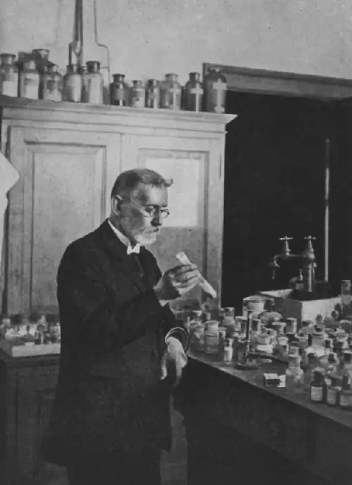
A few decades later, German scientists Josef Klarer, Fritz Mietzsch, and Gerhard Domagk discovered the antibacterial activity of a synthetic dye, prontosil, that could treat streptococcal and staphylococcal infections in mice. Domagk’s own daughter was one of the first human recipients of the drug, which completely cured her of a severe streptococcal infection that had resulted from a poke with an embroidery needle. Gerhard Domagk (1895–1964) was awarded the Nobel Prize in Medicine in 1939 for his work with prontosil and sulfanilamide, the active breakdown product of prontosil in the body. Sulfanilamide, the first synthetic antimicrobial created, served as the foundation for the chemical development of a family of sulfa drugs. A synthetic antimicrobial is a drug that is developed from a chemical not found in nature. The success of the sulfa drugs led to the discovery and production of additional important classes of synthetic antimicrobials, including the quinolines and oxazolidinones.
A few years before the discovery of prontosil, scientist Alexander Fleming (1881–1955) made his own accidental discovery that turned out to be monumental. In 1928, Fleming returned from holiday and examined some old plates of staphylococci in his research laboratory at St. Mary’s Hospital in London. He observed that contaminating mold growth (subsequently identified as a strain of Penicillium notatum) inhibited staphylococcal growth on one plate. Fleming, therefore, is credited with the discovery of penicillin, the first natural antibiotic, (Figure 14.4). Further experimentation showed that penicillin from the mold was antibacterial against streptococci, meningococci, and Corynebacterium diphtheriae, the causative agent of diphtheria.
Fleming and his colleagues were credited with discovering and identifying penicillin, but its isolation and mass production were accomplished by a team of researchers at Oxford University under the direction of Howard Florey (1898–1968) and Ernst Chain (1906–1979) (Figure 14.4). In 1940, the research team purified penicillin and reported its success as an antimicrobial agent against streptococcal infections in mice. Their subsequent work with human subjects also showed penicillin to be very effective. Because of their important work, Fleming, Florey, and Chain were awarded the Nobel Prize in Physiology and Medicine in 1945.
In the early 1940s, scientist Dorothy Hodgkin (1910–1994), who studied crystallography at Oxford University, used X-rays to analyze the structure of a variety of natural products. In 1946, she determined the structure of penicillin, for which she was awarded the Nobel Prize in Chemistry in 1964. Once the structure was understood, scientists could modify it to produce a variety of semisynthetic penicillins. A semisynthetic antimicrobial is a chemically modified derivative of a natural antibiotic. The chemical modifications are generally designed to increase the range of bacteria targeted, increase stability, decrease toxicity, or confer other properties beneficial for treating infections.
Penicillin is only one example of a natural antibiotic. Also in the 1940s, Selman Waksman (1888–1973) (Figure 14.5), a prominent soil microbiologist at Rutgers University, led a research team that discovered several antimicrobials, including actinomycin, streptomycin, and neomycin. The discoveries of these antimicrobials stemmed from Waksman’s study of fungi and the Actinobacteria, including soil bacteria in the genus Streptomyces, known for their natural production of a wide variety of antimicrobials. Key collaborators included Arthur Shatz, who first isolated streptomycin, and Elizabeth Bugie, who performed the antibacterial testing for the substance. All three were included on the critical paper about the discovery, but Waksman was noted for playing down the role of his collaborators in later writings and in the patent process. He was given the Nobel Prize in Physiology and Medicine in 1952. The actinomycetes are the source of more than half of all natural antibiotics6 and continue to serve as an excellent reservoir for the discovery of novel antimicrobial agents. Some researchers argue that we have not yet come close to tapping the full antimicrobial potential of this group.7
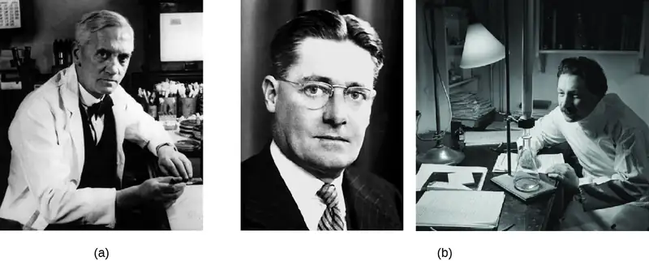
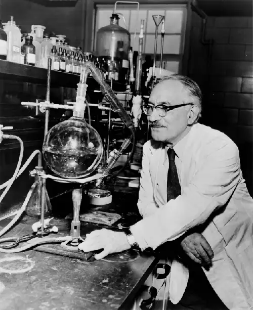
Check Your Understanding
- Why is the soil a reservoir for antimicrobial resistance genes?
14.2 Fundamentals of Antimicrobial Chemotherapy¶
Learning Objectives
By the end of this section, you will be able to:
- Contrast bacteriostatic versus bactericidal antibacterial activities
- Contrast broad-spectrum drugs versus narrow-spectrum drugs
- Explain the significance of superinfections
- Discuss the significance of dosage and the route of administration of a drug
- Identify factors and variables that can influence the side effects of a drug
- Describe the significance of positive and negative interactions between drugs
Several factors are important in choosing the most appropriate antimicrobial drug therapy, including bacteriostatic versus bactericidal mechanisms, spectrum of activity, dosage and route of administration, the potential for side effects, and the potential interactions between drugs. The following discussion will focus primarily on antibacterial drugs, but the concepts translate to other antimicrobial classes.
Bacteriostatic Versus Bactericidal¶
Antibacterial drugs can be either bacteriostatic or bactericidal in their interactions with target bacteria. Bacteriostatic drugs cause a reversible inhibition of growth, with bacterial growth restarting after elimination of the drug. By contrast, bactericidal drugs kill their target bacteria. The decision of whether to use a bacteriostatic or bactericidal drugs depends on the type of infection and the immune status of the patient. In a patient with strong immune defenses, bacteriostatic and bactericidal drugs can be effective in achieving clinical cure. However, when a patient is immunocompromised, a bactericidal drug is essential for the successful treatment of infections. Regardless of the immune status of the patient, life-threatening infections such as acute endocarditis require the use of a bactericidal drug.
Spectrum of Activity¶
The spectrum of activity of an antibacterial drug relates to diversity of targeted bacteria. A narrow-spectrum antimicrobial targets only specific subsets of bacterial pathogens. For example, some narrow-spectrum drugs only target gram-positive bacteria, whereas others target only gram-negative bacteria. If the pathogen causing an infection has been identified, it is best to use a narrow-spectrum antimicrobial and minimize collateral damage to the normal microbiota. A broad-spectrum antimicrobial targets a wide variety of bacterial pathogens, including both gram-positive and gram-negative species, and is frequently used as empiric therapy to cover a wide range of potential pathogens while waiting on the laboratory identification of the infecting pathogen. Broad-spectrum antimicrobials are also used for polymicrobic infections (mixed infection with multiple bacterial species), or as prophylactic prevention of infections with surgery/invasive procedures. Finally, broad-spectrum antimicrobials may be selected to treat an infection when a narrow-spectrum drug fails because of development of drug resistance by the target pathogen.
The risk associated with using broad-spectrum antimicrobials is that they will also target a broad spectrum of the normal microbiota, increasing the risk of a superinfection, a secondary infection in a patient having a preexisting infection. A superinfection develops when the antibacterial intended for the preexisting infection kills the protective microbiota, allowing another pathogen resistant to the antibacterial to proliferate and cause a secondary infection (Figure 14.6). Common examples of superinfections that develop as a result of antimicrobial usage include yeast infections (candidiasis) and pseudomembranous colitis caused by Clostridioides difficile, which can be fatal.
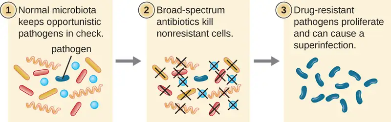
Check Your Understanding
- What is a superinfection and how does one arise?
Dosage and Route of Administration¶
The amount of medication given during a certain time interval is the dosage, and it must be determined carefully to ensure that optimum therapeutic drug levels are achieved at the site of infection without causing significant toxicity (side effects) to the patient. Each drug class is associated with a variety of potential side effects, and some of these are described for specific drugs later in this chapter. Despite best efforts to optimize dosing, allergic reactions and other potentially serious side effects do occur. Therefore, the goal is to select the optimum dosage that will minimize the risk of side effects while still achieving clinical cure, and there are important factors to consider when selecting the best dose and dosage interval. For example, in children, dose is based upon the patient’s mass. However, the same is not true for adults and children 12 years of age and older, for which there is typically a single standard dose regardless of the patient’s mass. With the great variability in adult body mass, some experts have argued that mass should be considered for all patients when determining appropriate dosage.8 An additional consideration is how drugs are metabolized and eliminated from the body. In general, patients with a history of liver or kidney dysfunction may experience reduced drug metabolism or clearance from the body, resulting in increased drug levels that may lead to toxicity and make them more prone to side effects.
There are also some factors specific to the drugs themselves that influence appropriate dose and time interval between doses. For example, the half-life, or rate at which 50% of a drug is eliminated from the plasma, can vary significantly between drugs. Some drugs have a short half-life of only 1 hour and must be given multiple times a day, whereas other drugs have half-lives exceeding 12 hours and can be given as a single dose every 24 hours. Although a longer half-life can be considered an advantage for an antibacterial when it comes to convenient dosing intervals, the longer half-life can also be a concern for a drug that has serious side effects because drug levels may remain toxic for a longer time. Last, some drugs are dose dependent, meaning they are more effective when administered in large doses to provide high levels for a short time at the site of infection. Others are time dependent, meaning they are more effective when lower optimum levels are maintained over a longer period of time.
The route of administration, the method used to introduce a drug into the body, is also an important consideration for drug therapy. Drugs that can be administered orally are generally preferred because patients can more conveniently take these drugs at home. However, some drugs are not absorbed easily from the gastrointestinal (GI) tract into the bloodstream. These drugs are often useful for treating diseases of the intestinal tract, such as tapeworms treated with niclosamide, or for decontaminating the bowel, as with colistin. Some drugs that are not absorbed easily, such as bacitracin, polymyxin, and several antifungals, are available as topical preparations for treatment of superficial skin infections. Sometimes, patients may not initially be able to take oral medications because of their illness (e.g., vomiting, intubation for respirator). When this occurs, and when a chosen drug is not absorbed in the GI tract, administration of the drug by a parenteral route (intravenous or intramuscular injection) is preferred and typically is performed in health-care settings. For most drugs, the plasma levels achieved by intravenous administration is substantially higher than levels achieved by oral or intramuscular administration, and this can also be an important consideration when choosing the route of administration for treating an infection (Figure 14.7).
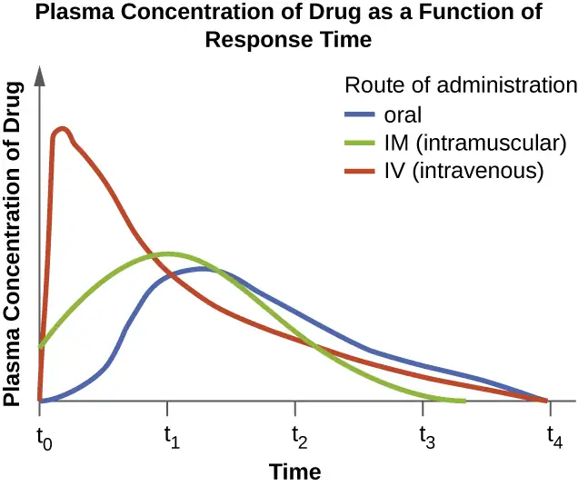
Check Your Understanding
- List five factors to consider when determining the dosage of a drug.
- Name some typical side effects associated with drugs and identify some factors that might contribute to these side effects.
Drug Interactions¶
For the optimum treatment of some infections, two antibacterial drugs may be administered together to provide a synergistic interaction that is better than the efficacy of either drug alone. A classic example of synergistic combinations is trimethoprim and sulfamethoxazole (Bactrim). Individually, these two drugs provide only bacteriostatic inhibition of bacterial growth, but combined, the drugs are bactericidal.
Whereas synergistic drug interactions provide a benefit to the patient, antagonistic interactions produce harmful effects. Antagonism can occur between two antimicrobials or between antimicrobials and nonantimicrobials being used to treat other conditions. The effects vary depending on the drugs involved, but antagonistic interactions may cause loss of drug activity, decreased therapeutic levels due to increased metabolism and elimination, or increased potential for toxicity due to decreased metabolism and elimination. As an example, some antibacterials are absorbed most effectively from the acidic environment of the stomach. If a patient takes antacids, however, this increases the pH of the stomach and negatively impacts the absorption of these antimicrobials, decreasing their effectiveness in treating an infection. Studies have also shown an association between use of some antimicrobials and failure of oral contraceptives.9
Check Your Understanding
- Explain the difference between synergistic and antagonistic drug interactions.
Eye on Ethics: Resistance Regulation
In the United States and many other countries, most antimicrobial drugs are self-administered by patients at home. Unfortunately, many patients stop taking antimicrobials once their symptoms dissipate and they feel better. If a 10-day course of treatment is prescribed, many patients only take the drug for 5 or 6 days, unaware of the negative consequences of not completing the full course of treatment. A shorter course of treatment not only fails to kill the target organisms to expected levels, it also selects for drug-resistant variants within the target population and within the patient’s microbiota.
Patients’ nonadherence especially amplifies drug resistance when the recommended course of treatment is long. Treatment for tuberculosis (TB) is a case in point, with the recommended treatment lasting from 6 months to a year. The CDC estimates that about one-third of the world’s population is infected with TB, most living in underdeveloped or underserved regions where antimicrobial drugs are available over the counter. In such countries, there may be even lower rates of adherence than in developed areas. Nonadherence leads to antibiotic resistance and more difficulty in controlling pathogens. As a direct result, the emergence of multidrug-resistant and extensively drug-resistant strains of TB is becoming a huge problem.
Overprescription of antimicrobials also contributes to antibiotic resistance. Patients often demand antibiotics for diseases that do not require them, like viral colds and ear infections. Pharmaceutical companies aggressively market drugs to physicians and clinics, making it easy for them to give free samples to patients, and some pharmacies even offer certain antibiotics free to low-income patients with a prescription.
In recent years, various initiatives have aimed to educate parents and clinicians about the judicious use of antibiotics. However, a recent study showed that, between 2000 and 2013, the parental expectation for antimicrobial prescriptions for children actually increased (Figure 14.8).
One possible solution is a regimen called directly observed therapy (DOT), which involves the supervised administration of medications to patients. Patients are either required to visit a health-care facility to receive their medications, or health-care providers must administer medication in patients’ homes or another designated location. DOT has been implemented in many cases for the treatment of TB and has been shown to be effective; indeed, DOT is an integral part of WHO’s global strategy for eradicating TB.10,11 But is this a practical strategy for all antibiotics? Would patients taking penicillin, for example, be more or less likely to adhere to the full course of treatment if they had to travel to a health-care facility for each dose? And who would pay for the increased cost associated with DOT? When it comes to overprescription, should someone be policing physicians or drug companies to enforce best practices? What group should assume this responsibility, and what penalties would be effective in discouraging overprescription?
![Three graphs showing changes in perception from 2000 to 2013. If my doctor does not prescribe an antibiotic when I think one is needed, I will take my child to another doctor. Medicaid insured insured (2000, 10%) and (2013, 25%); commercially insured (2000, 8%) and (2013, 10%). If I expect an antibiotic, I am less satisfied if I don’t receive it: Medicaid insured (2000, 10%) and (2013, 24%); commercially insured (2000, 14%) and (2013, 15%). If would rather give my child an antibiotic that may not be needed than wait to see if she gets better without it.. Medicaid insured (2000, 9%) and (2013, 19%). Commercially insured (2000, 8%) and (2013, 6%)](img/osc-microbio-14-04-pressure.webp)
14.3 Mechanisms of Antibacterial Drugs¶
Learning Objective
- Describe the mechanisms of action associated with drugs that inhibit cell wall biosynthesis, protein synthesis, membrane function, nucleic acid synthesis, and metabolic pathways
An important quality for an antimicrobial drug is selective toxicity, meaning that it selectively kills or inhibits the growth of microbial targets while causing minimal or no harm to the host. Most antimicrobial drugs currently in clinical use are antibacterial because the prokaryotic cell provides a greater variety of unique targets for selective toxicity, in comparison to fungi, parasites, and viruses. Each class of antibacterial drugs has a unique mode of action (the way in which a drug affects microbes at the cellular level), and these are summarized in Figure 14.9 and Table 14.1.
![An illustration of a cell is shown with a view inside. The double helix is visible in the center, and a label points to it indicating DNA synthesis, fluoroquinolones, ciprofloxacin, levofloxacin, moxifloxacin, RNA synthesis, Rifamycins, and rifampin. Another label points to the cell wall and indicates beta lactams, penicillins, cephalosporins, monobactams, carbapenems, glycopepties, vancomycin, and bacitracin. A third label points to the plasma membrane and indicates polymyxins, polymyxin B, colistin, lipopeptide, and daptomycin. Within the cytoplasm, another label points to ribosomes, which include 30s subunit, aminoglycosides, tetracyclines, 50s subunit, macrolides, lincosamides, chloramphenicol, and oxazolidinones. The final label points to the metabolic pathways and indicates folic acid synthesis, sulfonamides, sulfones, trimethoprim, mycolic acid synthesis, and izoniazid.](img/osc-microbio-14-02-modes.webp)
Table 14.1
| Common Antibacterial Drugs by Mode of Action | ||
|---|---|---|
| Mode of Action | Target | Drug Class |
| Inhibit cell wall biosynthesis | Penicillin-binding proteins | β-lactams: penicillins, cephalosporins, monobactams, carbapenems |
| Peptidoglycan subunits | Glycopeptides | |
| Peptidoglycan subunit transport | Bacitracin | |
| Inhibit biosynthesis of proteins | 30S ribosomal subunit | Aminoglycosides, tetracyclines |
| 50S ribosomal subunit | Macrolides, lincosamides, chloramphenicol, oxazolidinones | |
| Disrupt membranes | Lipopolysaccharide, inner and outer membranes | Polymyxin B, colistin, daptomycin |
| Inhibit nucleic acid synthesis | RNA | Rifamycin |
| DNA | Fluoroquinolones | |
| Antimetabolites | Folic acid synthesis enzyme | Sulfonamides, trimethoprim |
| Mycolic acid synthesis enzyme | Isonicotinic acid hydrazide | |
| Mycobacterial adenosine triphosphate (ATP) synthase inhibitor | Mycobacterial ATP synthase | Diarylquinoline |
Inhibitors of Cell Wall Biosynthesis¶
Several different classes of antibacterials block steps in the biosynthesis of peptidoglycan, making cells more susceptible to osmotic lysis (Table 14.2). Therefore, antibacterials that target cell wall biosynthesis are bactericidal in their action. Because human cells do not make peptidoglycan, this mode of action is an excellent example of selective toxicity.
Penicillin, the first antibiotic discovered, is one of several antibacterials within a class called β-lactams. This group of compounds includes the penicillins, cephalosporins, monobactams, and carbapenems, and is characterized by the presence of a β-lactam ring found within the central structure of the drug molecule (Figure 14.10). The β-lactam antibacterials block the crosslinking of peptide chains during the biosynthesis of new peptidoglycan in the bacterial cell wall. They are able to block this process because the β-lactam structure is similar to the structure of the peptidoglycan subunit component that is recognized by the crosslinking transpeptidase enzyme, also known as a penicillin-binding protein (PBP). Although the β-lactam ring must remain unchanged for these drugs to retain their antibacterial activity, strategic chemical changes to the R groups have allowed for development of a wide variety of semisynthetic β-lactam drugs with increased potency, expanded spectrum of activity, and longer half-lives for better dosing, among other characteristics.
Penicillin G and penicillin V are natural antibiotics from fungi and are primarily active against gram-positive bacterial pathogens, and a few gram-negative bacterial pathogens such as Pasteurella multocida. Figure 14.10 summarizes the semisynthetic development of some of the penicillins. Adding an amino group (-NH2) to penicillin G created the aminopenicillins (i.e., ampicillin and amoxicillin) that have increased spectrum of activity against more gram-negative pathogens. Furthermore, the addition of a hydroxyl group (-OH) to amoxicillin increased acid stability, which allows for improved oral absorption. Methicillin is a semisynthetic penicillin that was developed to address the spread of enzymes (penicillinases) that were inactivating the other penicillins. Changing the R group of penicillin G to the more bulky dimethoxyphenyl group provided protection of the β-lactam ring from enzymatic destruction by penicillinases, giving us the first penicillinase-resistant penicillin.
Similar to the penicillins, cephalosporins contain a β-lactam ring (Figure 14.10) and block the transpeptidase activity of penicillin-binding proteins. However, the β-lactam ring of cephalosporins is fused to a six-member ring, rather than the five-member ring found in penicillins. This chemical difference provides cephalosporins with an increased resistance to enzymatic inactivation by β-lactamases. The drug cephalosporin C was originally isolated from the fungus Cephalosporium acremonium in the 1950s and has a similar spectrum of activity to that of penicillin against gram-positive bacteria but is active against more gram-negative bacteria than penicillin. Another important structural difference is that cephalosporin C possesses two R groups, compared with just one R group for penicillin, and this provides for greater diversity in chemical alterations and development of semisynthetic cephalosporins. The family of semisynthetic cephalosporins is much larger than the penicillins, and these drugs have been classified into generations based primarily on their spectrum of activity, increasing in spectrum from the narrow-spectrum, first-generation cephalosporins to the broad-spectrum, fourth-generation cephalosporins. A new fifth-generation cephalosporin has been developed that is active against methicillin-resistant Staphylococcus aureus (MRSA).
The carbapenems and monobactams also have a β-lactam ring as part of their core structure, and they inhibit the transpeptidase activity of penicillin-binding proteins. The only monobactam used clinically is aztreonam. It is a narrow-spectrum antibacterial with activity only against gram-negative bacteria. In contrast, the carbapenem family includes a variety of semisynthetic drugs (imipenem, meropenem, and doripenem) that provide very broad-spectrum activity against gram-positive and gram-negative bacterial pathogens.
The drug vancomycin, a member of a class of compounds called the glycopeptides, was discovered in the 1950s as a natural antibiotic from the actinomycete Amycolatopsis orientalis. Similar to the β-lactams, vancomycin inhibits cell wall biosynthesis and is bactericidal. However, in contrast to the β-lactams, the structure of vancomycin is not similar to that of cell-wall peptidoglycan subunits and does not directly inactivate penicillin-binding proteins. Rather, vancomycin is a very large, complex molecule that binds to the end of the peptide chain of cell wall precursors, creating a structural blockage that prevents the cell wall subunits from being incorporated into the growing N-acetylglucosamine and N-acetylmuramic acid (NAM-NAG) backbone of the peptidoglycan structure (transglycosylation). Vancomycin also structurally blocks transpeptidation. Vancomycin is bactericidal against gram-positive bacterial pathogens, but it is not active against gram-negative bacteria because of its inability to penetrate the protective outer membrane.
The drug bacitracin consists of a group of structurally similar peptide antibiotics originally isolated from Bacillus subtilis. Bacitracin blocks the activity of a specific cell-membrane molecule that is responsible for the movement of peptidoglycan precursors from the cytoplasm to the exterior of the cell, ultimately preventing their incorporation into the cell wall. Bacitracin is effective against a wide range of bacteria, including gram-positive organisms found on the skin, such as Staphylococcus and Streptococcus. Although it may be administered orally or intramuscularly in some circumstances, bacitracin has been shown to be nephrotoxic (damaging to the kidneys). Therefore, it is more commonly combined with neomycin and polymyxin in topical ointments such as Neosporin.
![The top of the image shows diagrams of various antibiotics. All have a beta-lactam ring wich is a square made of 3 carbons and a nitrogen; one of the carbons has a double bonded O. The antibiotics shown are penicillin, cephalosporin, monobactam and carbapenem Below is a table with the rows: R group, Drug name, specrum of activity and route of administration. Penicillin G has an R group of a carbon linked to a 6 carbon ring; it is active on G+ and a few G- cells, and has a parenteral route of administration. Penicillin V has an R group of a carbon linked t an oxygen linked to a carbon ring. IT affects G+ and a few G- and is administered orally. Ampicillin has an R group of a Carbon attached to both an amine group and a carbon ring. It is affective agains G+ and more G- than penicillin. It is administered orally and parenterally. Amoxicillin has an R group similar to ampicillin but the carbon rign has an additional OH. It has similar activity to ampicillin and is administerd orally (better than ampicillin). Methiciliin has an R group of a carbon right with 2 CH3O attached to the ring. IT is affective against G+ only, including B-lactam producers. It is administered parenterally.](img/osc-microbio-14-02-betalactam.webp)
Table 14.2
| Drugs that Inhibit Bacterial Cell Wall Synthesis | ||||
|---|---|---|---|---|
| Mechanism of Action | Drug Class | Specific Drugs | Natural or Semisynthetic | Spectrum of Activity |
| Interact directly with PBPs and inhibit transpeptidase activity | Penicillins | Penicillin G, penicillin V | Natural | Narrow-spectrum against gram-positive and a few gram-negative bacteria |
| Ampicillin, amoxicillin | Semisynthetic | Narrow-spectrum against gram-positive bacteria but with increased gram-negative spectrum | ||
| Methicillin | Semisynthetic | Narrow-spectrum against gram-positive bacteria only, including strains producing penicillinase | ||
| Cephalosporins | Cephalosporin C | Natural | Narrow-spectrum similar to penicillin but with increased gram-negative spectrum | |
| First-generation cephalosporins | Semisynthetic | Narrow-spectrum similar to cephalosporin C | ||
| Second-generation cephalosporins | Semisynthetic | Narrow-spectrum but with increased gram-negative spectrum compared with first generation | ||
| Third- and fourth-generation cephalosporins | Semisynthetic | Broad-spectrum against gram-positive and gram-negative bacteria, including some β-lactamase producers | ||
| Fifth-generation cephalosporins | Semisynthetic | Broad-spectrum against gram-positive and gram-negative bacteria, including MRSA | ||
| Monobactams | Aztreonam | Semisynthetic | Narrow-spectrum against gram-negative bacteria, including some β-lactamase producers | |
| Carbapenems | Imipenem, meropenem, doripenem | Semisynthetic | Broadest spectrum of the β-lactams against gram-positive and gram-negative bacteria, including many β-lactamase producers | |
| Large molecules that bind to the peptide chain of peptidoglycan subunits, blocking transglycosylation and transpeptidation | Glycopeptides | Vancomycin | Natural | Narrow spectrum against gram-positive bacteria only, including multidrug-resistant strains |
| Block transport of peptidoglycan subunits across cytoplasmic membrane | Bacitracin | Bacitracin | Natural | Broad-spectrum against gram-positive and gram-negative bacteria |
Check Your Understanding
- Describe the mode of action of β-lactams.
Inhibitors of Protein Biosynthesis¶
The cytoplasmic ribosomes found in animal cells (80S) are structurally distinct from those found in bacterial cells (70S), making protein biosynthesis a good selective target for antibacterial drugs. Several types of protein biosynthesis inhibitors are discussed in this section and are summarized in Figure 14.11.
Protein Synthesis Inhibitors That Bind the 30S Subunit¶
Aminoglycosides are large, highly polar antibacterial drugs that bind to the 30S subunit of bacterial ribosomes, impairing the proofreading ability of the ribosomal complex. This impairment causes mismatches between codons and anticodons, resulting in the production of proteins with incorrect amino acids and shortened proteins that insert into the cytoplasmic membrane. Disruption of the cytoplasmic membrane by the faulty proteins kills the bacterial cells. The aminoglycosides, which include drugs such as streptomycin, gentamicin, neomycin, and kanamycin, are potent broad-spectrum antibacterials. However, aminoglycosides have been shown to be nephrotoxic (damaging to kidney), neurotoxic (damaging to the nervous system), and ototoxic (damaging to the ear).
Another class of antibacterial compounds that bind to the 30S subunit is the tetracyclines. In contrast to aminoglycosides, these drugs are bacteriostatic and inhibit protein synthesis by blocking the association of tRNAs with the ribosome during translation. Naturally occurring tetracyclines produced by various strains of Streptomyces were first discovered in the 1940s, and several semisynthetic tetracyclines, including doxycycline and tigecycline have also been produced. Although the tetracyclines are broad spectrum in their coverage of bacterial pathogens, side effects that can limit their use include phototoxicity, permanent discoloration of developing teeth, and liver toxicity with high doses or in patients with kidney impairment.
Protein Synthesis Inhibitors That Bind the 50S Subunit¶
There are several classes of antibacterial drugs that work through binding to the 50S subunit of bacterial ribosomes. The macrolide antibacterial drugs have a large, complex ring structure and are part of a larger class of naturally produced secondary metabolites called polyketides, complex compounds produced in a stepwise fashion through the repeated addition of two-carbon units by a mechanism similar to that used for fatty acid synthesis. Macrolides are broad-spectrum, bacteriostatic drugs that block elongation of proteins by inhibiting peptide bond formation between specific combinations of amino acids. The first macrolide was erythromycin. It was isolated in 1952 from Streptomyces erythreus and prevents translocation. Semisynthetic macrolides include azithromycin and telithromycin. Compared with erythromycin, azithromycin has a broader spectrum of activity, fewer side effects, and a significantly longer half-life (1.5 hours for erythromycin versus 68 hours for azithromycin) that allows for once-daily dosing and a short 3-day course of therapy (i.e., Zpac formulation) for most infections. Telithromycin is the first semisynthetic within the class known as ketolides. Although telithromycin shows increased potency and activity against macrolide-resistant pathogens, the US Food and Drug Administration (FDA) has limited its use to treatment of community-acquired pneumonia and requires the strongest “black box warning” label for the drug because of serious hepatotoxicity.
The lincosamides include the naturally produced lincomycin and semisynthetic clindamycin. Although structurally distinct from macrolides, lincosamides are similar in their mode of action to the macrolides through binding to the 50S ribosomal subunit and preventing peptide bond formation. Lincosamides are particularly active against streptococcal and staphylococcal infections.
The drug chloramphenicol represents yet another structurally distinct class of antibacterials that also bind to the 50S ribosome, inhibiting peptide bond formation. Chloramphenicol, produced by Streptomyces venezuelae, was discovered in 1947; in 1949, it became the first broad-spectrum antibiotic that was approved by the FDA. Although it is a natural antibiotic, it is also easily synthesized and was the first antibacterial drug synthetically mass produced. As a result of its mass production, broad-spectrum coverage, and ability to penetrate into tissues efficiently, chloramphenicol was historically used to treat a wide range of infections, from meningitis to typhoid fever to conjunctivitis. Unfortunately, serious side effects, such as lethal gray baby syndrome, and suppression of bone marrow production, have limited its clinical role. Chloramphenicol also causes anemia in two different ways. One mechanism involves the targeting of mitochondrial ribosomes within hematopoietic stem cells, causing a reversible, dose-dependent suppression of blood cell production. Once chloramphenicol dosing is discontinued, blood cell production returns to normal. This mechanism highlights the similarity between 70S ribosomes of bacteria and the 70S ribosomes within our mitochondria. The second mechanism of anemia is idiosyncratic (i.e., the mechanism is not understood), and involves an irreversible lethal loss of blood cell production known as aplastic anemia. This mechanism of aplastic anemia is not dose dependent and can develop after therapy has stopped. Because of toxicity concerns, chloramphenicol usage in humans is now rare in the United States and is limited to severe infections unable to be treated by less toxic antibiotics. Because its side effects are much less severe in animals, it is used in veterinary medicine.
The oxazolidinones, including linezolid, are a new broad-spectrum class of synthetic protein synthesis inhibitors that bind to the 50S ribosomal subunit of both gram-positive and gram-negative bacteria. However, their mechanism of action seems somewhat different from that of the other 50S subunit-binding protein synthesis inhibitors already discussed. Instead, they seem to interfere with formation of the initiation complex (association of the 50S subunit, 30S subunit, and other factors) for translation, and they prevent translocation of the growing protein from the ribosomal A site to the P site. Table 14.3 summarizes the protein synthesis inhibitors.
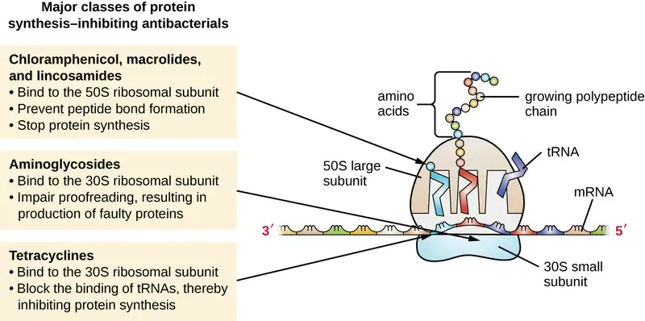
Table 14.3
| Drugs That Inhibit Bacterial Protein Synthesis | |||||
|---|---|---|---|---|---|
| Molecular Target | Mechanism of Action | Drug Class | Specific Drugs | Bacteriostatic or Bactericidal | Spectrum of Activity |
| 30S subunit | Causes mismatches between codons and anticodons, leading to faulty proteins that insert into and disrupt cytoplasmic membrane | Aminoglycosides | Streptomycin, gentamicin, neomycin, kanamycin | Bactericidal | Broad spectrum |
| Blocks association of tRNAs with ribosome | Tetracyclines | Tetracycline, doxycycline, tigecycline | Bacteriostatic | Broad spectrum | |
| 50S subunit | Blocks peptide bond formation between amino acids | Macrolides | Erythromycin, azithromycin, telithromycin | Bacteriostatic | Broad spectrum |
| Lincosamides | Lincomycin, clindamycin | Bacteriostatic | Broad spectrum | ||
| Not applicable | Chloramphenicol | Bacteriostatic | Broad spectrum | ||
| Interferes with the formation of the initiation complex between 50S and 30S subunits and other factors. | Oxazolidinones | Linezolid | Bacteriostatic | Broad spectrum | |
Check Your Understanding
- Compare and contrast the different types of protein synthesis inhibitors.
Inhibitors of Membrane Function¶
A small group of antibacterials target the bacterial membrane as their mode of action (Table 14.4). The polymyxins are natural polypeptide antibiotics that were first discovered in 1947 as products of Bacillus polymyxa; only polymyxin B and polymyxin E (colistin) have been used clinically. They are lipophilic with detergent-like properties and interact with the lipopolysaccharide component of the outer membrane of gram-negative bacteria, ultimately disrupting both their outer and inner membranes and killing the bacterial cells. Unfortunately, the membrane-targeting mechanism is not a selective toxicity, and these drugs also target and damage the membrane of cells in the kidney and nervous system when administered systemically. Because of these serious side effects and their poor absorption from the digestive tract, polymyxin B is used in over-the-counter topical antibiotic ointments (e.g., Neosporin), and oral colistin was historically used only for bowel decontamination to prevent infections originating from bowel microbes in immunocompromised patients or for those undergoing certain abdominal surgeries. However, the emergence and spread of multidrug-resistant pathogens has led to increased use of intravenous colistin in hospitals, often as a drug of last resort to treat serious infections. The antibacterial daptomycin is a cyclic lipopeptide produced by Streptomyces roseosporus that seems to work like the polymyxins, inserting in the bacterial cell membrane and disrupting it. However, in contrast to polymyxin B and colistin, which target only gram-negative bacteria, daptomycin specifically targets gram-positive bacteria. It is typically administered intravenously and seems to be well tolerated, showing reversible toxicity in skeletal muscles.
Table 14.4
| Drugs That Inhibit Bacterial Membrane Function | ||||
|---|---|---|---|---|
| Mechanism of Action | Drug Class | Specific Drugs | Spectrum of Activity | Clinical Use |
| Interacts with lipopolysaccharide in the outer membrane of gram-negative bacteria, killing the cell through the eventual disruption of the outer membrane and cytoplasmic membrane | Polymyxins | Polymyxin B | Narrow spectrum against gram-negative bacteria, including multidrug-resistant strains | Topical preparations to prevent infections in wounds |
| Polymyxin E (colistin) | Narrow spectrum against gram-negative bacteria, including multidrug-resistant strains | Oral dosing to decontaminate bowels to prevent infections in immunocompromised patients or patients undergoing invasive surgery/procedures. | ||
| Intravenous dosing to treat serious systemic infections caused by multidrug-resistant pathogens | ||||
| Inserts into the cytoplasmic membrane of gram-positive bacteria, disrupting the membrane and killing the cell | Lipopeptide | Daptomycin | Narrow spectrum against gram-positive bacteria, including multidrug-resistant strains | Complicated skin and skin-structure infections and bacteremia caused by gram-positive pathogens, including MRSA |
Check Your Understanding
- How do polymyxins inhibit membrane function?
Inhibitors of Nucleic Acid Synthesis¶
Some antibacterial drugs work by inhibiting nucleic acid synthesis (Table 14.5). For example, metronidazole is a semisynthetic member of the nitroimidazole family that is also an antiprotozoan. It interferes with DNA replication in target cells. The drug rifampin is a semisynthetic member of the rifamycin family and functions by blocking RNA polymerase activity in bacteria. The RNA polymerase enzymes in bacteria are structurally different from those in eukaryotes, providing for selective toxicity against bacterial cells. It is used for the treatment of a variety of infections, but its primary use, often in a cocktail with other antibacterial drugs, is against mycobacteria that cause tuberculosis. Despite the selectivity of its mechanism, rifampin can induce liver enzymes to increase metabolism of other drugs being administered (antagonism), leading to hepatotoxicity (liver toxicity) and negatively influencing the bioavailability and therapeutic effect of the companion drugs.
One member of the quinolone family, a group of synthetic antimicrobials, is nalidixic acid. It was discovered in 1962 as a byproduct during the synthesis of chloroquine, an antimalarial drug. Nalidixic acid selectively inhibits the activity of bacterial DNA gyrase, blocking DNA replication. Chemical modifications to the original quinolone backbone have resulted in the production of fluoroquinolones, like ciprofloxacin and levofloxacin, which also inhibit the activity of DNA gyrase. Ciprofloxacin and levofloxacin are effective against a broad spectrum of gram-positive or gram-negative bacteria, and are among the most commonly prescribed antibiotics used to treat a wide range of infections, including urinary tract infections, respiratory infections, abdominal infections, and skin infections. However, despite their selective toxicity against DNA gyrase, side effects associated with different fluoroquinolones include phototoxicity, neurotoxicity, cardiotoxicity, glucose metabolism dysfunction, and increased risk for tendon rupture.
Table 14.5
| Drugs That Inhibit Bacterial Nucleic Acid Synthesis | ||||
|---|---|---|---|---|
| Mechanisms of Action | Drug Class | Specific Drugs | Spectrum of activity | Clinical Use |
| Inhibits bacterial RNA polymerase activity and blocks transcription, killing the cell | Rifamycin | Rifampin | Narrow spectrum with activity against gram-positive and limited numbers of gram-negative bacteria. Also active against Mycobacterium tuberculosis. | Combination therapy for treatment of tuberculosis |
| Inhibits the activity of DNA gyrase and blocks DNA replication, killing the cell | Fluoroquinolones | Ciprofloxacin, ofloxacin, moxifloxacin | Broad spectrum against gram-positive and gram-negative bacteria | Wide variety of skin and systemic infections |
Check Your Understanding
- Why do inhibitors of bacterial nucleic acid synthesis not target host cells?
Inhibitors of Metabolic Pathways¶
Some synthetic drugs control bacterial infections by functioning as antimetabolites, competitive inhibitors for bacterial metabolic enzymes (Table 14.6). The sulfonamides (sulfa drugs) are the oldest synthetic antibacterial agents and are structural analogues of para-aminobenzoic acid (PABA), an early intermediate in folic acid synthesis (Figure 14.12). By inhibiting the enzyme involved in the production of dihydrofolic acid, sulfonamides block bacterial biosynthesis of folic acid and, subsequently, pyrimidines and purines required for nucleic acid synthesis. This mechanism of action provides bacteriostatic inhibition of growth against a wide spectrum of gram-positive and gram-negative pathogens. Because humans obtain folic acid from food instead of synthesizing it intracellularly, sulfonamides are selectively toxic for bacteria. However, allergic reactions to sulfa drugs are common. The sulfones are structurally similar to sulfonamides but are not commonly used today except for the treatment of Hansen’s disease (leprosy).
Trimethoprim is a synthetic antimicrobial compound that serves as an antimetabolite within the same folic acid synthesis pathway as sulfonamides. However, trimethoprim is a structural analogue of dihydrofolic acid and inhibits a later step in the metabolic pathway (Figure 14.12). Trimethoprim is used in combination with the sulfa drug sulfamethoxazole to treat urinary tract infections, ear infections, and bronchitis. As discussed, the combination of trimethoprim and sulfamethoxazole is an example of antibacterial synergy. When used alone, each antimetabolite only decreases production of folic acid to a level where bacteriostatic inhibition of growth occurs. However, when used in combination, inhibition of both steps in the metabolic pathway decreases folic acid synthesis to a level that is lethal to the bacterial cell. Because of the importance of folic acid during fetal development, sulfa drugs and trimethoprim use should be carefully considered during early pregnancy.
The drug isoniazid is an antimetabolite with specific toxicity for mycobacteria and has long been used in combination with rifampin or streptomycin in the treatment of tuberculosis. It is administered as a prodrug, requiring activation through the action of an intracellular bacterial peroxidase enzyme, forming isoniazid-nicotinamide adenine dinucleotide (NAD) and isoniazid-nicotinamide adenine dinucleotide phosphate (NADP), ultimately preventing the synthesis of mycolic acid, which is essential for mycobacterial cell walls. Possible side effects of isoniazid use include hepatotoxicity, neurotoxicity, and hematologic toxicity (anemia).
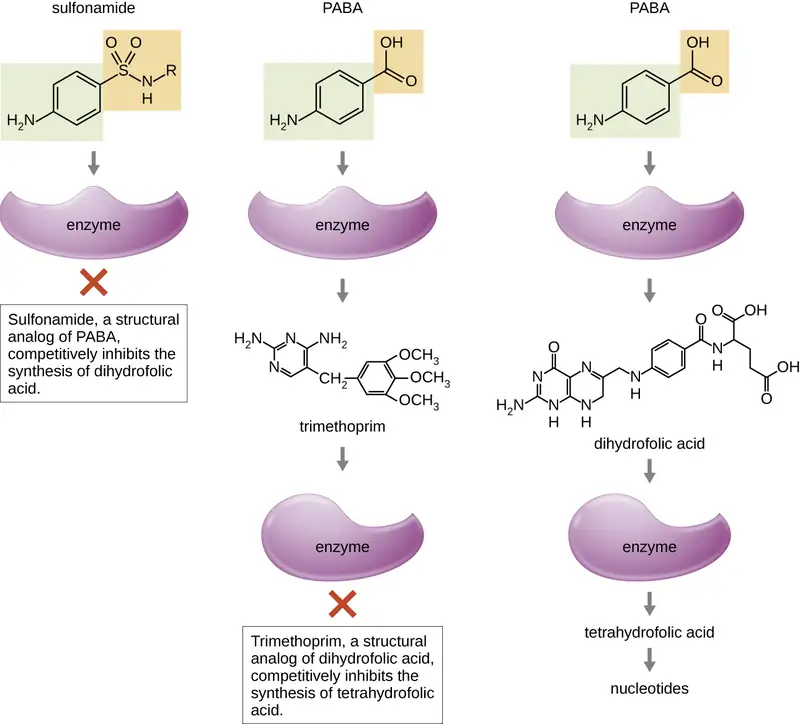
Table 14.6
| Antimetabolite Drugs | ||||
|---|---|---|---|---|
| Metabolic Pathway Target | Mechanism of Action | Drug Class | Specific Drugs | Spectrum of Activity |
| Folic acid synthesis | Inhibits the enzyme involved in production of dihydrofolic acid | Sulfonamides | Sulfamethoxazole | Broad spectrum against gram-positive and gram-negative bacteria |
| Sulfones | Dapsone | |||
| Inhibits the enzyme involved in the production of tetrahydrofolic acid | Not applicable | Trimethoprim | Broad spectrum against gram-positive and gram-negative bacteria | |
| Mycolic acid synthesis | Interferes with the synthesis of mycolic acid | Not applicable | Isoniazid | Narrow spectrum against Mycobacterium spp., including M. tuberculosis |
Check Your Understanding
- How do sulfonamides and trimethoprim selectively target bacteria?
Inhibitor of ATP Synthase¶
Bedaquiline, representing the synthetic antibacterial class of compounds called the diarylquinolines, uses a novel mode of action that specifically inhibits mycobacterial growth. Although the specific mechanism has yet to be elucidated, this compound appears to interfere with the function of ATP synthases, perhaps by interfering with the use of the hydrogen ion gradient for ATP synthesis by oxidative phosphorylation, leading to reduced ATP production. Due to its side effects, including hepatotoxicity and potentially lethal heart arrhythmia, its use is reserved for serious, otherwise untreatable cases of tuberculosis.
Link to Learning
To learn more about the general principles of antimicrobial therapy and bacterial modes of action, read this article for a general overview of antimicrobial therapy strategies and read this article on the mechanism of action of antimicrobial classes.
Clinical Focus: Part 2
Reading thorough Marisa’s health history, the doctor noticed that during her hospitalization in Vietnam, she was catheterized and received the antimicrobial drugs ceftazidime and metronidazole. Upon learning this, the doctor ordered a CT scan of Marisa’s abdomen to rule out appendicitis; the doctor also requested blood work to see if she had an elevated white blood cell count, and ordered a urine analysis test and urine culture to look for the presence of white blood cells, red blood cells, and bacteria.
Marisa’s urine sample came back positive for the presence of bacteria, indicating a urinary tract infection (UTI). The doctor prescribed ciprofloxacin. In the meantime, her urine was cultured to grow the bacterium for further testing.
- What types of antimicrobials are typically prescribed for UTIs?
- Based upon the antimicrobial drugs she was given in Vietnam, which of the antimicrobials for treatment of a UTI would you predict to be ineffective?
Jump to the next Clinical Focus box. Go back to the previous Clinical Focus box.
14.4 Mechanisms of Other Antimicrobial Drugs¶
Learning Objective
- Explain the differences between modes of action of drugs that target fungi, protozoa, helminths, and viruses
Because fungi, protozoa, and helminths are eukaryotic, their cells are very similar to human cells, making it more difficult to develop drugs with selective toxicity. Additionally, viruses replicate within human host cells, making it difficult to develop drugs that are selectively toxic to viruses or virus-infected cells. Despite these challenges, there are antimicrobial drugs that target fungi, protozoa, helminths, and viruses, and some even target more than one type of microbe. Table 14.7, Table 14.8, Table 14.9, and Table 14.10 provide examples for antimicrobial drugs in these various classes.
Antifungal Drugs¶
The most common mode of action for antifungal drugs is the disruption of the cell membrane. Antifungals take advantage of small differences between fungi and humans in the biochemical pathways that synthesize sterols. The sterols are important in maintaining proper membrane fluidity and, hence, proper function of the cell membrane. For most fungi, the predominant membrane sterol is ergosterol. Because human cell membranes use cholesterol, instead of ergosterol, antifungal drugs that target ergosterol synthesis are selectively toxic (Figure 14.13).
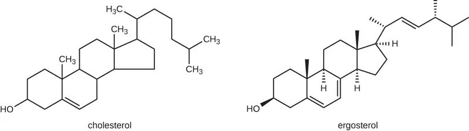
The imidazoles are synthetic fungicides that disrupt ergosterol biosynthesis; they are commonly used in medical applications and also in agriculture to keep seeds and harvested crops from molding. Examples include miconazole, ketoconazole, and clotrimazole, which are used to treat fungal skin infections such as ringworm, specifically tinea pedis (athlete’s foot), tinea cruris (jock itch), and tinea corporis. These infections are commonly caused by dermatophytes of the genera Trichophyton, Epidermophyton, and Microsporum. Miconazole is also used predominantly for the treatment of vaginal yeast infections caused by the fungus Candida, and ketoconazole is used for the treatment of tinea versicolor and dandruff, which both can be caused by the fungus Malassezia.
The triazole drugs, including fluconazole, also inhibit ergosterol biosynthesis. However, they can be administered orally or intravenously for the treatment of several types of systemic yeast infections, including oral thrush and cryptococcal meningitis, both of which are prevalent in patients with AIDS. The triazoles also exhibit more selective toxicity, compared with the imidazoles, and are associated with fewer side effects.
The allylamines, a structurally different class of synthetic antifungal drugs, inhibit an earlier step in ergosterol biosynthesis. The most commonly used allylamine is terbinafine (marketed under the brand name Lamisil), which is used topically for the treatment of dermatophytic skin infections like athlete’s foot, ringworm, and jock itch. Oral treatment with terbinafine is also used for the treatment of fingernail and toenail fungus, but it can be associated with the rare side effect of hepatotoxicity.
The polyenes are a class of antifungal agents naturally produced by certain actinomycete soil bacteria and are structurally related to macrolides. These large, lipophilic molecules bind to ergosterol in fungal cytoplasmic membranes, thus creating pores. Common examples include nystatin and amphotericin B. Nystatin is typically used as a topical treatment for yeast infections of the skin, mouth, and vagina, but may also be used for intestinal fungal infections. The drug amphotericin B is used for systemic fungal infections like aspergillosis, cryptococcal meningitis, histoplasmosis, blastomycosis, and candidiasis. Amphotericin B was the only antifungal drug available for several decades, but its use is associated with some serious side effects, including nephrotoxicity (kidney toxicity).
Amphotericin B is often used in combination with flucytosine, a fluorinated pyrimidine analog that is converted by a fungal-specific enzyme into a toxic product that interferes with both DNA replication and protein synthesis in fungi. Flucytosine is also associated with hepatotoxicity (liver toxicity) and bone marrow depression.
Beyond targeting ergosterol in fungal cell membranes, there are a few antifungal drugs that target other fungal structures (Figure 14.14). The echinocandins, including caspofungin, are a group of naturally produced antifungal compounds that block the synthesis of β(1→3) glucan found in fungal cell walls but not found in human cells. This drug class has the nickname “penicillin for fungi.” Caspofungin is used for the treatment of aspergillosis as well as systemic yeast infections.
Although chitin is only a minor constituent of fungal cell walls, it is also absent in human cells, making it a selective target. The polyoxins and nikkomycins are naturally produced antifungals that target chitin synthesis. Polyoxins are used to control fungi for agricultural purposes, and nikkomycin Z is currently under development for use in humans to treat yeast infections and Valley fever (coccidioidomycosis), a fungal disease prevalent in the southwestern US.13
The naturally produced antifungal griseofulvin is thought to specifically disrupt fungal cell division by interfering with microtubules involved in spindle formation during mitosis. It was one of the first antifungals, but its use is associated with hepatotoxicity. It is typically administered orally to treat various types of dermatophytic skin infections when other topical antifungal treatments are ineffective.
There are a few drugs that act as antimetabolites against fungal processes. For example, atovaquone, a representative of the naphthoquinone drug class, is a semisynthetic antimetabolite for fungal and protozoal versions of a mitochondrial cytochrome important in electron transport. Structurally, it is an analog of coenzyme Q, with which it competes for electron binding. It is particularly useful for the treatment of Pneumocystis pneumonia caused by Pneumocystis jirovecii. The antibacterial sulfamethoxazole-trimethoprim combination also acts as an antimetabolite against P. jirovecii.
Table 14.7 shows the various therapeutic classes of antifungal drugs, categorized by mode of action, with examples of each.
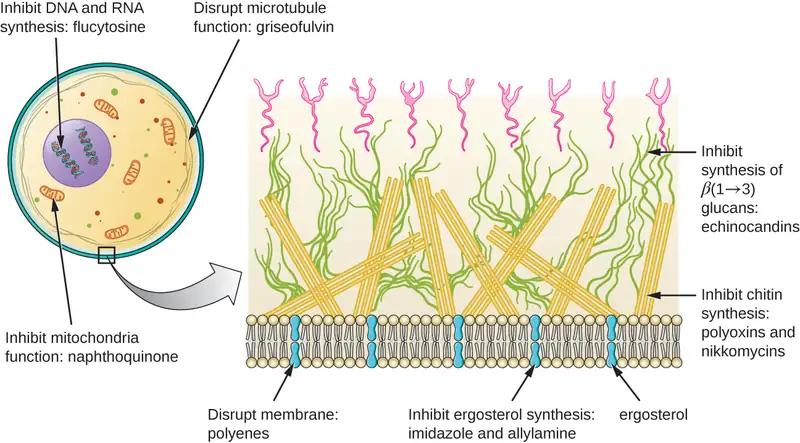
Table 14.7
| Common Antifungal Drugs | |||
|---|---|---|---|
| Mechanism of Action | Drug Class | Specific Drugs | Clinical Uses |
| Inhibit ergosterol synthesis | Imidazoles | Miconazole, ketoconazole, clotrimazole | Fungal skin infections and vaginal yeast infections |
| Triazoles | Fluconazole | Systemic yeast infections, oral thrush, and cryptococcal meningitis | |
| Allylamines | Terbinafine | Dermatophytic skin infections (athlete’s foot, ring worm, jock itch), and infections of fingernails and toenails | |
| Bind ergosterol in the cell membrane and create pores that disrupt the membrane | Polyenes | Nystatin | Used topically for yeast infections of skin, mouth, and vagina; also used for fungal infections of the intestine |
| Amphotericin B | Variety systemic fungal infections | ||
| Inhibit cell wall synthesis | Echinocandins | Caspofungin | Aspergillosis and systemic yeast infections |
| Not applicable | Nikkomycin Z | Coccidioidomycosis (Valley fever) and yeast infections | |
| Inhibit microtubules and cell division | Not applicable | Griseofulvin | Dermatophytic skin infections |
Check Your Understanding
- How is disruption of ergosterol biosynthesis an effective mode of action for antifungals?
Case in Point: Treating a Fungal Infection of the Lungs
Jack, a 48-year-old engineer, is HIV positive but generally healthy thanks to antiretroviral therapy (ART). However, after a particularly intense week at work, he developed a fever and a dry cough. He assumed that he just had a cold or mild flu due to overexertion and didn’t think much of it. However, after about a week, he began to experience fatigue, weight loss, and shortness of breath. He decided to visit his physician, who found that Jack had a low level of blood oxygenation. The physician ordered blood testing, a chest X-ray, and the collection of an induced sputum sample for analysis. His X-ray showed a fine cloudiness and several pneumatoceles (thin-walled pockets of air), which indicated Pneumocystis pneumonia (PCP), a type of pneumonia caused by the fungus Pneumocystis jirovecii. Jack’s physician admitted him to the hospital and prescribed Bactrim, a combination of sulfamethoxazole and trimethoprim, to be administered intravenously.
P. jirovecii is a yeast-like fungus with a life cycle similar to that of protozoans. As such, it was classified as a protozoan until the 1980s. It lives only in the lung tissue of infected persons and is transmitted from person to person, with many people exposed as children. Typically, P. jirovecii only causes pneumonia in immunocompromised individuals. Healthy people may carry the fungus in their lungs with no symptoms of disease. PCP is particularly problematic among HIV patients with compromised immune systems.
PCP is usually treated with oral or intravenous Bactrim, but atovaquone or pentamidine (another antiparasitic drug) are alternatives. If not treated, PCP can progress, leading to a collapsed lung and nearly 100% mortality. Even with antimicrobial drug therapy, PCP still is responsible for 10% of HIV-related deaths.
The cytological examination, using direct immunofluorescence assay (DFA), of a smear from Jack’s sputum sample confirmed the presence of P. jirovecii (Figure 14.15). Additionally, the results of Jack’s blood tests revealed that his white blood cell count had dipped, making him more susceptible to the fungus. His physician reviewed his ART regimen and made adjustments. After a few days of hospitalization, Jack was released to continue his antimicrobial therapy at home. With the adjustments to his ART therapy, Jack’s CD4 counts began to increase and he was able to go back to work.
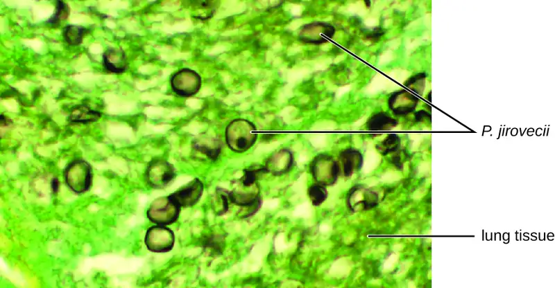
Antiprotozoan Drugs¶
There are a few mechanisms by which antiprotozoan drugs target infectious protozoans (Table 14.9). Some are antimetabolites, such as atovaquone, proguanil, and artemisinins. Atovaquone, in addition to being antifungal, blocks electron transport in protozoans and is used for the treatment of protozoan infections including malaria, babesiosis, and toxoplasmosis. Proguanil is another synthetic antimetabolite that is processed in parasitic cells into its active form, which inhibits protozoan folic acid synthesis. It is often used in combination with atovaquone, and the combination is marketed as Malarone for both malaria treatment and prevention.
Artemisinin, a plant-derived antifungal first discovered by Tu Youyou and other Chinese scientists in the 1970s, is quite effective against malaria. Semisynthetic derivatives of artemisinin are more water soluble than the natural version, which makes them more bioavailable. Although the exact mechanism of action is unclear, artemisinins appear to act as prodrugs that are metabolized by target cells to produce reactive oxygen species (ROS) that damage target cells. Due to the rise in resistance to antimalarial drugs, artemisinins are also commonly used in combination with other antimalarial compounds in artemisinin-based combination therapy (ACT).
Several antimetabolites are used for the treatment of toxoplasmosis caused by the parasite Toxoplasma gondii. The synthetic sulfa drug sulfadiazine competitively inhibits an enzyme in folic acid production in parasites and can be used to treat malaria and toxoplasmosis. Pyrimethamine is a synthetic drug that inhibits a different enzyme in the folic acid production pathway and is often used in combination with sulfadoxine (another sulfa drug) for the treatment of malaria or in combination with sulfadiazine for the treatment of toxoplasmosis. Side effects of pyrimethamine include decreased bone marrow activity that may cause increased bruising and low red blood cell counts. When toxicity is a concern, spiramycin, a macrolide protein synthesis inhibitor, is typically administered for the treatment of toxoplasmosis.
Two classes of antiprotozoan drugs interfere with nucleic acid synthesis: nitroimidazoles and quinolines. Nitroimidazoles, including semisynthetic metronidazole, which was discussed previously as an antibacterial drug, and synthetic tinidazole, are useful in combating a wide variety of protozoan pathogens, such as Giardia lamblia, Entamoeba histolytica, and Trichomonas vaginalis. Upon introduction into these cells in low-oxygen environments, nitroimidazoles become activated and introduce DNA strand breakage, interfering with DNA replication in target cells. Unfortunately, metronidazole is associated with carcinogenesis (the development of cancer) in humans.
Another type of synthetic antiprotozoan drug that has long been thought to specifically interfere with DNA replication in certain pathogens is pentamidine. It has historically been used for the treatment of African sleeping sickness (caused by the protozoan Trypanosoma brucei) and leishmaniasis (caused by protozoa of the genus Leishmania), but it is also an alternative treatment for the fungus Pneumocystis. Some studies indicate that it specifically binds to the DNA found within kinetoplasts (kDNA; long mitochondrion-like structures unique to trypanosomes), leading to the cleavage of kDNA. However, nuclear DNA of both the parasite and host remain unaffected. It also appears to bind to tRNA, inhibiting the addition of amino acids to tRNA, thus preventing protein synthesis. Possible side effects of pentamidine use include pancreatic dysfunction and liver damage.
The quinolines are a class of synthetic compounds related to quinine, which has a long history of use against malaria. Quinolines are thought to interfere with heme detoxification, which is necessary for the parasite’s effective breakdown of hemoglobin into amino acids inside red blood cells. The synthetic derivatives chloroquine, quinacrine (also called mepacrine), and mefloquine are commonly used as antimalarials, and chloroquine is also used to treat amebiasis typically caused by Entamoeba histolytica. Long-term prophylactic use of chloroquine or mefloquine may result in serious side effects, including hallucinations or cardiac issues. Patients with glucose-6-phosphate dehydrogenase deficiency experience severe anemia when treated with chloroquine.
Table 14.8
| Common Antiprotozoan Drugs | |||
|---|---|---|---|
| Mechanism of Action | Drug Class | Specific Drugs | Clinical Uses |
| Inhibit electron transport in mitochondria | Naphthoquinone | Atovaquone | Malaria, babesiosis, and toxoplasmosis |
| Inhibit folic acid synthesis | Not applicable | Proquanil | Combination therapy with atovaquone for malaria treatment and prevention |
| Sulfonamide | Sulfadiazine | Malaria and toxoplasmosis | |
| Not applicable | Pyrimethamine | Combination therapy with sulfadoxine (sulfa drug) for malaria | |
| Produces damaging reactive oxygen species | Not applicable | Artemisinin | Combination therapy to treat malaria |
| Inhibit DNA synthesis | Nitroimidazoles | Metronidazole, tinidazole | Infections caused by Giardia lamblia, Entamoeba histolytica, and Trichomonas vaginalis |
| Not applicable | Pentamidine | African sleeping sickness and leishmaniasis | |
| Inhibit heme detoxification | Quinolines | Chloroquine | Malaria and infections with E. histolytica |
| Mepacrine, mefloquine | Malaria | ||
Check Your Understanding
- List two modes of action for antiprotozoan drugs.
Antihelminthic Drugs¶
Because helminths are multicellular eukaryotes like humans, developing drugs with selective toxicity against them is extremely challenging. Despite this, several effective classes have been developed (Table 14.9). Synthetic benzimidazoles, like mebendazole and albendazole, bind to helminthic β-tubulin, preventing microtubule formation. Microtubules in the intestinal cells of the worms seem to be particularly affected, leading to a reduction in glucose uptake. Besides their activity against a broad range of helminths, benzimidazoles are also active against many protozoans, fungi, and viruses, and their use for inhibiting mitosis and cell cycle progression in cancer cells is under study.14 Possible side effects of their use include liver damage and bone marrow suppression.
The avermectins are members of the macrolide family that were first discovered from a Japanese soil isolate, Streptomyces avermectinius. A more potent semisynthetic derivative of avermectin is ivermectin, which binds to glutamate-gated chloride channels specific to invertebrates including helminths, blocking neuronal transmission and causing starvation, paralysis, and death of the worms. Ivermectin is used to treat roundworm diseases, including onchocerciasis (also called river blindness, caused by the worm Onchocerca volvulus) and strongyloidiasis (caused by the worm Strongyloides stercoralis or S. fuelleborni). Ivermectin also can also treat parasitic insects like mites, lice, and bed bugs, and is nontoxic to humans.
Niclosamide is a synthetic drug that has been used for over 50 years to treat tapeworm infections. Although its mode of action is not entirely clear, niclosamide appears to inhibit ATP formation under anaerobic conditions and inhibit oxidative phosphorylation in the mitochondria of its target pathogens. Niclosamide is not absorbed from the gastrointestinal tract, thus it can achieve high localized intestinal concentrations in patients. Recently, it has been shown to also have antibacterial, antiviral, and antitumor activities.151617
Another synthetic antihelminthic drug is praziquantel, which used for the treatment of parasitic tapeworms and liver flukes, and is particularly useful for the treatment of schistosomiasis (caused by blood flukes from three genera of Schistosoma). Its mode of action remains unclear, but it appears to cause the influx of calcium into the worm, resulting in intense spasm and paralysis of the worm. It is often used as a preferred alternative to niclosamide in the treatment of tapeworms when gastrointestinal discomfort limits niclosamide use.
The thioxanthenones, another class of synthetic drugs structurally related to quinine, exhibit antischistosomal activity by inhibiting RNA synthesis. The thioxanthenone lucanthone and its metabolite hycanthone were the first used clinically, but serious neurological, gastrointestinal, cardiovascular, and hepatic side effects led to their discontinuation. Oxamniquine, a less toxic derivative of hycanthone, is only effective against S. mansoni, one of the three species known to cause schistosomiasis in humans. Praziquantel was developed to target the other two schistosome species, but concerns about increasing resistance have renewed interest in developing additional derivatives of oxamniquine to target all three clinically important schistosome species.
Table 14.9
| Common Antihelminthic Drugs | |||
|---|---|---|---|
| Mechanism of Action | Drug Class | Specific Drugs | Clinical Uses |
| Inhibit microtubule formation, reducing glucose uptake | Benzimidazoles | Mebendazole, albendazole | Variety of helminth infections |
| Block neuronal transmission, causing paralysis and starvation | Avermectins | Ivermectin | Roundworm diseases, including river blindness and strongyloidiasis, and treatment of parasitic insects |
| Inhibit ATP production | Not applicable | Niclosamide | Intestinal tapeworm infections |
| Induce calcium influx | Not applicable | Praziquantel | Schistosomiasis (blood flukes) |
| Inhibit RNA synthesis | Thioxanthenones | Lucanthone, hycanthone, oxamniquine | Schistosomiasis (blood flukes) |
Check Your Understanding
- Why are antihelminthic drugs difficult to develop?
Antiviral Drugs¶
Unlike the complex structure of fungi, protozoa, and helminths, viral structure is simple, consisting of nucleic acid, a protein coat, viral enzymes, and, sometimes, a lipid envelope. Furthermore, viruses are obligate intracellular pathogens that use the host’s cellular machinery to replicate. These characteristics make it difficult to develop drugs with selective toxicity against viruses.
Many antiviral drugs are nucleoside analogs and function by inhibiting nucleic acid biosynthesis. For example, acyclovir (marketed as Zovirax) is a synthetic analog of the nucleoside guanosine (Figure 14.16). It is activated by the herpes simplex viral enzyme thymidine kinase and, when added to a growing DNA strand during replication, causes chain termination. Its specificity for virus-infected cells comes from both the need for a viral enzyme to activate it and the increased affinity of the activated form for viral DNA polymerase compared to host cell DNA polymerase. Acyclovir and its derivatives are frequently used for the treatment of herpes virus infections, including genital herpes, chickenpox, shingles, Epstein-Barr virus infections, and cytomegalovirus infections. Acyclovir can be administered either topically or systemically, depending on the infection. One possible side effect of its use includes nephrotoxicity. The drug adenine-arabinoside, marketed as vidarabine, is a synthetic analog to deoxyadenosine that has a mechanism of action similar to that of acyclovir. It is also effective for the treatment of various human herpes viruses. However, because of possible side effects involving low white blood cell counts and neurotoxicity, treatment with acyclovir is now preferred.
Ribavirin, another synthetic guanosine analog, works by a mechanism of action that is not entirely clear. It appears to interfere with both DNA and RNA synthesis, perhaps by reducing intracellular pools of guanosine triphosphate (GTP). Ribavarin also appears to inhibit the RNA polymerase of hepatitis C virus. It is primarily used for the treatment of the RNA viruses like hepatitis C (in combination therapy with interferon) and respiratory syncytial virus. Possible side effects of ribavirin use include anemia and developmental effects on unborn children in pregnant patients. In recent years, another nucleotide analog, sofosbuvir (Solvaldi), has also been developed for the treatment of hepatitis C. Sofosbuvir is a uridine analog that interferes with viral polymerase activity. It is commonly coadministered with ribavirin, with and without interferon.
Inhibition of nucleic acid synthesis is not the only target of synthetic antivirals. Although the mode of action of amantadine and its relative rimantadine are not entirely clear, these drugs appear to bind to a transmembrane protein that is involved in the escape of the influenza virus from endosomes. Blocking escape of the virus also prevents viral RNA release into host cells and subsequent viral replication. Increasing resistance has limited the use of amantadine and rimantadine in the treatment of influenza A. Use of amantadine can result in neurological side effects, but the side effects of rimantadine seem less severe. Interestingly, because of their effects on brain chemicals such as dopamine and NMDA (N-methyl D-aspartate), amantadine and rimantadine are also used for the treatment of Parkinson’s disease.
Neuraminidase inhibitors, including olsetamivir (Tamiflu), zanamivir (Relenza), and peramivir (Rapivab), specifically target influenza viruses by blocking the activity of influenza virus neuraminidase, preventing the release of the virus from infected cells. These three antivirals can decrease flu symptoms and shorten the duration of illness, but they differ in their modes of administration: olsetamivir is administered orally, zanamivir is inhaled, and peramivir is administered intravenously. Resistance to these neuraminidase inhibitors still seems to be minimal.
Pleconaril is a synthetic antiviral under development that showed promise for the treatment of picornaviruses. Use of pleconaril for the treatment of the common cold caused by rhinoviruses was not approved by the FDA in 2002 because of lack of proven effectiveness, lack of stability, and association with irregular menstruation. Its further development for this purpose was halted in 2007. However, pleconaril is still being investigated for use in the treatment of life-threatening complications of enteroviruses, such as meningitis and sepsis. It is also being investigated for use in the global eradication of a specific enterovirus, polio.18 Pleconaril seems to work by binding to the viral capsid and preventing the uncoating of viral particles inside host cells during viral infection.
Viruses with complex life cycles, such as HIV, can be more difficult to treat. First, HIV targets CD4-positive white blood cells, which are necessary for a normal immune response to infection. Second, HIV is a retrovirus, meaning that it converts its RNA genome into a DNA copy that integrates into the host cell’s genome, thus hiding within host cell DNA. Third, the HIV reverse transcriptase lacks proofreading activity and introduces mutations that allow for rapid development of antiviral drug resistance. To help prevent the emergence of resistance, a combination of specific synthetic antiviral drugs is typically used in ART for HIV (Figure 14.17).
The reverse transcriptase inhibitors block the early step of converting viral RNA genome into DNA, and can include competitive nucleoside analog inhibitors (e.g., azidothymidine/zidovudine, or AZT) and non-nucleoside noncompetitive inhibitors (e.g., etravirine) that bind reverse transcriptase and cause an inactivating conformational change. Drugs called protease inhibitors (e.g., ritonavir) block the processing of viral proteins and prevent viral maturation. Protease inhibitors are also being developed for the treatment of other viral types.19 For example, simeprevir (Olysio) has been approved for the treatment of hepatitis C and is administered with ribavirin and interferon in combination therapy. The integrase inhibitors (e.g., raltegravir), block the activity of the HIV integrase responsible for the recombination of a DNA copy of the viral genome into the host cell chromosome. Additional drug classes for HIV treatment include the CCR5 antagonists and the fusion inhibitors (e.g., enfuviritide), which prevent the binding of HIV to the host cell coreceptor (chemokine receptor type 5 [CCR5]) and the merging of the viral envelope with the host cell membrane, respectively. Table 14.10 shows the various therapeutic classes of antiviral drugs, categorized by mode of action, with examples of each.
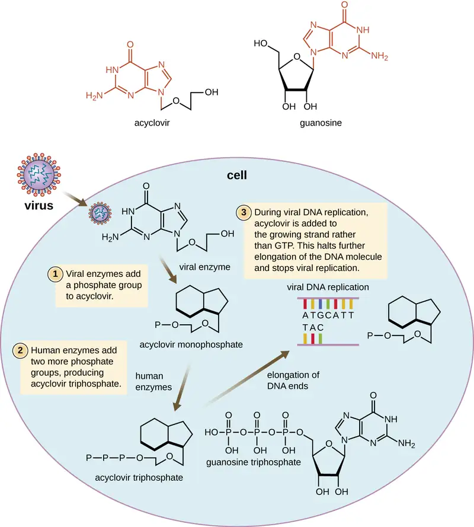
![Diagram showing HIV infection and locations where drugs can stop the infection. GP120 and G(42 are proteins that are on the surface of the virus and bind to CD4 receptor and CCR5. Enfuvirtide is a fusion inhibitor that blocks this process. When the virus enters, it produces DNA from RNA, this can be blocked by AZT and etravirine which are reverse-transcriptase inhibitors. Next, the viral DNA integrates into the host DNA. Raltegravir is an integrase inhibitor and blocks this step. Finally the virus is rebuild. Ritonavir is a protease inhibitor and blocks this step.](img/osc-microbio-14-03-art.webp)
Table 14.10
| Common Antiviral Drugs | ||
|---|---|---|
| Mechanism of Action | Drug | Clinical Uses |
| Nucleoside analog inhibition of nucleic acid synthesis | Acyclovir | Herpes virus infections |
| Azidothymidine/zidovudine (AZT) | HIV infections | |
| Ribavirin | Hepatitis C virus and respiratory syncytial virus infections | |
| Vidarabine | Herpes virus infections | |
| Sofosbuvir | Hepatitis C virus infections | |
| Non-nucleoside noncompetitive inhibition | Etravirine | HIV infections |
| Inhibit escape of virus from endosomes | Amantadine, rimantadine | Infections with influenza virus |
| Inhibit neuraminadase | Olsetamivir, zanamivir, peramivir | Infections with influenza virus |
| Inhibit viral uncoating | Pleconaril | Serious enterovirus infections |
| Inhibition of protease | Ritonavir | HIV infections |
| Simeprevir | Hepatitis C virus infections | |
| Inhibition of integrase | Raltegravir | HIV infections |
| Inhibition of membrane fusion | Enfuviritide | HIV infections |
Check Your Understanding
- Why is HIV difficult to treat with antivirals?
Link to Learning
To learn more about the various classes of antiretroviral drugs used in the ART of HIV infection, explore each of the drugs in the HIV drug classes provided by US Department of Health and Human Services at this website.
14.5 Drug Resistance¶
Learning Objectives
By the end of this section, you will be able to:
- Explain the concept of drug resistance
- Describe how microorganisms develop or acquire drug resistance
- Describe the different mechanisms of antimicrobial drug resistance
Antimicrobial resistance is not a new phenomenon. In nature, microbes are constantly evolving in order to overcome the antimicrobial compounds produced by other microorganisms. Human development of antimicrobial drugs and their widespread clinical use has simply provided another selective pressure that promotes further evolution. Several important factors can accelerate the evolution of drug resistance. These include the overuse and misuse of antimicrobials, inappropriate use of antimicrobials, subtherapeutic dosing, and patient noncompliance with the recommended course of treatment.
Exposure of a pathogen to an antimicrobial compound can select for chromosomal mutations conferring resistance, which can be transferred vertically to subsequent microbial generations and eventually become predominant in a microbial population that is repeatedly exposed to the antimicrobial. Alternatively, many genes responsible for drug resistance are found on plasmids or in transposons that can be transferred easily between microbes through horizontal gene transfer (see How Asexual Prokaryotes Achieve Genetic Diversity). Transposons also have the ability to move resistance genes between plasmids and chromosomes to further promote the spread of resistance.
Mechanisms for Drug Resistance¶
There are several common mechanisms for drug resistance, which are summarized in Figure 14.18. These mechanisms include enzymatic modification of the drug, modification of the antimicrobial target, and prevention of drug penetration or accumulation.
![Mechanisms of resistance. Efflux pump (pumping drugs out of the cell): fluoroquinolones, aminoglycosides, tetracyclines, Beta-lactams, macrolides. Blocked penetration (not letting drugs into the cell): beta-lactams, tetracyclines, fluoroquinolones. Target modification (changing the target of the drug such as ribosomes or DNA): fluoroquinolones, rfamycins, vancomycin, beta-lactams, macrolides, aminoglycosides. Inactivating enzyme (enzyme that breaks down the drug): beta-lactams, aminoglycosides, macrolides, rifamycins.](img/osc-microbio-14-06-resistance.webp)
Drug Modification or Inactivation¶
Resistance genes may code for enzymes that chemically modify an antimicrobial, thereby inactivating it, or destroy an antimicrobial through hydrolysis. Resistance to many types of antimicrobials occurs through this mechanism. For example, aminoglycoside resistance can occur through enzymatic transfer of chemical groups to the drug molecule, impairing the binding of the drug to its bacterial target. For β-lactams, bacterial resistance can involve the enzymatic hydrolysis of the β-lactam bond within the β-lactam ring of the drug molecule. Once the β-lactam bond is broken, the drug loses its antibacterial activity. This mechanism of resistance is mediated by β-lactamases, which are the most common mechanism of β-lactam resistance. Inactivation of rifampin commonly occurs through glycosylation, phosphorylation, or adenosine diphosphate (ADP) ribosylation, and resistance to macrolides and lincosamides can also occur due to enzymatic inactivation of the drug or modification.
Prevention of Cellular Uptake or Efflux¶
Microbes may develop resistance mechanisms that involve inhibiting the accumulation of an antimicrobial drug, which then prevents the drug from reaching its cellular target. This strategy is common among gram-negative pathogens and can involve changes in outer membrane lipid composition, porin channel selectivity, and/or porin channel concentrations. For example, a common mechanism of carbapenem resistance among Pseudomonas aeruginosa is to decrease the amount of its OprD porin, which is the primary portal of entry for carbapenems through the outer membrane of this pathogen. Additionally, many gram-positive and gram-negative pathogenic bacteria produce efflux pumps that actively transport an antimicrobial drug out of the cell and prevent the accumulation of drug to a level that would be antibacterial. For example, resistance to β-lactams, tetracyclines, and fluoroquinolones commonly occurs through active efflux out of the cell, and it is rather common for a single efflux pump to have the ability to translocate multiple types of antimicrobials.
Target Modification¶
Because antimicrobial drugs have very specific targets, structural changes to those targets can prevent drug binding, rendering the drug ineffective. Through spontaneous mutations in the genes encoding antibacterial drug targets, bacteria have an evolutionary advantage that allows them to develop resistance to drugs. This mechanism of resistance development is quite common. Genetic changes impacting the active site of penicillin-binding proteins (PBPs) can inhibit the binding of β-lactam drugs and provide resistance to multiple drugs within this class. This mechanism is very common among strains of Streptococcus pneumoniae, which alter their own PBPs through genetic mechanisms. In contrast, strains of Staphylococcus aureus develop resistance to methicillin (MRSA) through the acquisition of a new low-affinity PBP, rather than structurally alter their existing PBPs. Not only does this new low-affinity PBP provide resistance to methicillin but it provides resistance to virtually all β-lactam drugs, with the exception of the newer fifth-generation cephalosporins designed specifically to kill MRSA. Other examples of this resistance strategy include alterations in
- ribosome subunits, providing resistance to macrolides, tetracyclines, and aminoglycosides;
- lipopolysaccharide (LPS) structure, providing resistance to polymyxins;
- RNA polymerase, providing resistance to rifampin;
- DNA gyrase, providing resistance to fluoroquinolones;
- metabolic enzymes, providing resistance to sulfa drugs, sulfones, and trimethoprim; and
- peptidoglycan subunit peptide chains, providing resistance to glycopeptides.
Target Overproduction or Enzymatic Bypass¶
When an antimicrobial drug functions as an antimetabolite, targeting a specific enzyme to inhibit its activity, there are additional ways that microbial resistance may occur. First, the microbe may overproduce the target enzyme such that there is a sufficient amount of antimicrobial-free enzyme to carry out the proper enzymatic reaction. Second, the bacterial cell may develop a bypass that circumvents the need for the functional target enzyme. Both of these strategies have been found as mechanisms of sulfonamide resistance. Vancomycin resistance among S. aureus has been shown to involve the decreased cross-linkage of peptide chains in the bacterial cell wall, which provides an increase in targets for vancomycin to bind to in the outer cell wall. Increased binding of vancomycin in the outer cell wall provides a blockage that prevents free drug molecules from penetrating to where they can block new cell wall synthesis.
Target Mimicry¶
A recently discovered mechanism of resistance called target mimicry involves the production of proteins that prevent drugs from binding to their bacterial cellular targets. For example, fluoroquinolone resistance by Mycobacterium tuberculosis can involve the production of a protein that resembles DNA. This protein is called MfpA (Mycobacterium fluoroquinolone resistance protein A). The mimicry of DNA by MfpA results in DNA gyrase binding to MfpA, preventing the binding of fluoroquinolones to DNA gyrase.
Check Your Understanding
- List several mechanisms for drug resistance.
Multidrug-Resistant Microbes and Cross Resistance¶
From a clinical perspective, our greatest concerns are multidrug-resistant microbes (MDRs) and cross resistance. MDRs are colloquially known as “superbugs” and carry one or more resistance mechanism(s), making them resistant to multiple antimicrobials. In cross-resistance, a single resistance mechanism confers resistance to multiple antimicrobial drugs. For example, having an efflux pump that can export multiple antimicrobial drugs is a common way for microbes to be resistant to multiple drugs by using a single resistance mechanism. In recent years, several clinically important superbugs have emerged, and the CDC reports that superbugs are responsible for more than 2 million infections in the US annually, resulting in at least 23,000 fatalities.20 Several of the superbugs discussed in the following sections have been dubbed the ESKAPE pathogens. This acronym refers to the names of the pathogens (Enterococcus faecium, Staphylococcus aureus, Klebsiella pneumoniae, Acinetobacter baumannii, Pseudomonas aeruginosa and Enterobacter spp.) but it is also fitting in that these pathogens are able to “escape” many conventional forms of antimicrobial therapy. As such, infections by ESKAPE pathogens can be difficult to treat and they cause a large number of nosocomial infections.
Methicillin-Resistant Staphylococcus aureus (MRSA)¶
Methicillin, a semisynthetic penicillin, was designed to resist inactivation by β-lactamases. Unfortunately, soon after the introduction of methicillin to clinical practice, methicillin-resistant strains of S. aureus appeared and started to spread. The mechanism of resistance, acquisition of a new low-affinity PBP, provided S. aureus with resistance to all available β-lactams. Strains of methicillin-resistant S. aureus (MRSA) are widespread opportunistic pathogens and a particular concern for skin and other wound infections, but may also cause pneumonia and septicemia. Although originally a problem in health-care settings (hospital-acquired MRSA [HA-MRSA]), MRSA infections are now also acquired through contact with contaminated members of the general public, called community-associated MRSA (CA-MRSA). Approximately one-third of the population carries S. aureus as a member of their normal nasal microbiota without illness, and about 6% of these strains are methicillin resistant.2122
Micro Connections: Clavulanic Acid: Penicillin’s Little Helper
With the introduction of penicillin in the early 1940s, and its subsequent mass production, society began to think of antibiotics as miracle cures for a wide range of infectious diseases. Unfortunately, as early as 1945, penicillin resistance was first documented and started to spread. Greater than 90% of current S. aureus clinical isolates are resistant to penicillin.23
Although developing new antimicrobial drugs is one solution to this problem, scientists have explored new approaches, including the development of compounds that inactivate resistance mechanisms. The development of clavulanic acid represents an early example of this strategy. Clavulanic acid is a molecule produced by the bacterium Streptococcus clavuligerus. It contains a β-lactam ring, making it structurally similar to penicillin and other β-lactams, but shows no clinical effectiveness when administered on its own. Instead, clavulanic acid binds irreversibly within the active site of β-lactamases and prevents them from inactivating a coadministered penicillin.
Clavulanic acid was first developed in the 1970s and was mass marketed in combination with amoxicillin beginning in the 1980s under the brand name Augmentin. As is typically the case, resistance to the amoxicillin-clavulanic acid combination soon appeared. Resistance most commonly results from bacteria increasing production of their β-lactamase and overwhelming the inhibitory effects of clavulanic acid, mutating their β-lactamase so it is no longer inhibited by clavulanic acid, or from acquiring a new β-lactamase that is not inhibited by clavulanic acid. Despite increasing resistance concerns, clavulanic acid and related β-lactamase inhibitors (sulbactam and tazobactam) represent an important new strategy: the development of compounds that directly inhibit antimicrobial resistance-conferring enzymes.
Vancomycin-Resistant Enterococci and Staphylococcus aureus¶
Vancomycin is only effective against gram-positive organisms, and it is used to treat wound infections, septic infections, endocarditis, and meningitis that are caused by pathogens resistant to other antibiotics. It is considered one of the last lines of defense against such resistant infections, including MRSA. With the rise of antibiotic resistance in the 1970s and 1980s, vancomycin use increased, and it is not surprising that we saw the emergence and spread of vancomycin-resistant enterococci (VRE), vancomycin-resistant S. aureus (VRSA), and vancomycin-intermediate S. aureus (VISA). The mechanism of vancomycin resistance among enterococci is target modification involving a structural change to the peptide component of the peptidoglycan subunits, preventing vancomycin from binding. These strains are typically spread among patients in clinical settings by contact with health-care workers and contaminated surfaces and medical equipment.
VISA and VRSA strains differ from each other in the mechanism of resistance and the degree of resistance each mechanism confers. VISA strains exhibit intermediate resistance, with a minimum inhibitory concentration (MIC) of 4–8 μg/mL, and the mechanism involves an increase in vancomycin targets. VISA strains decrease the crosslinking of peptide chains in the cell wall, providing an increase in vancomycin targets that trap vancomycin in the outer cell wall. In contrast, VRSA strains acquire vancomycin resistance through horizontal transfer of resistance genes from VRE, an opportunity provided in individuals coinfected with both VRE and MRSA. VRSA exhibit a higher level of resistance, with MICs of 16 μg/mL or higher.24 In the case of all three types of vancomycin-resistant bacteria, rapid clinical identification is necessary so proper procedures to limit spread can be implemented. The oxazolidinones like linezolid are useful for the treatment of these vancomycin-resistant, opportunistic pathogens, as well as MRSA.
Extended-Spectrum β-Lactamase–Producing Gram-Negative Pathogens¶
Gram-negative pathogens that produce extended-spectrum β-lactamases (ESBLs) show resistance well beyond just penicillins. The spectrum of β-lactams inactivated by ESBLs provides for resistance to all penicillins, cephalosporins, monobactams, and the β-lactamase-inhibitor combinations, but not the carbapenems. An even greater concern is that the genes encoding for ESBLs are usually found on mobile plasmids that also contain genes for resistance to other drug classes (e.g., fluoroquinolones, aminoglycosides, tetracyclines), and may be readily spread to other bacteria by horizontal gene transfer. These multidrug-resistant bacteria are members of the intestinal microbiota of some individuals, but they are also important causes of opportunistic infections in hospitalized patients, from whom they can be spread to other people.
Carbapenem-Resistant Gram-Negative Bacteria¶
The occurrence of carbapenem-resistant Enterobacteriaceae (CRE) and carbapenem resistance among other gram-negative bacteria (e.g., P. aeruginosa, Acinetobacter baumannii, Stenotrophomonas maltophila) is a growing health-care concern. These pathogens develop resistance to carbapenems through a variety of mechanisms, including production of carbapenemases (broad-spectrum β-lactamases that inactivate all β-lactams, including carbapenems), active efflux of carbapenems out of the cell, and/or prevention of carbapenem entry through porin channels. Similar to concerns with ESBLs, carbapenem-resistant, gram-negative pathogens are usually resistant to multiple classes of antibacterials, and some have even developed pan-resistance (resistance to all available antibacterials). Infections with carbapenem-resistant, gram-negative pathogens commonly occur in health-care settings through interaction with contaminated individuals or medical devices, or as a result of surgery.
Multidrug-Resistant Mycobacterium tuberculosis¶
The emergence of multidrug-resistant Mycobacterium tuberculosis (MDR-TB) and extensively drug-resistant Mycobacterium tuberculosis (XDR-TB) is also of significant global concern. MDR-TB strains are resistant to both rifampin and isoniazid, the drug combination typically prescribed for treatment of tuberculosis. XDR-TB strains are additionally resistant to any fluoroquinolone and at least one of three other drugs (amikacin, kanamycin, or capreomycin) used as a second line of treatment, leaving these patients very few treatment options. Both types of pathogens are particularly problematic in immunocompromised persons, including those suffering from HIV infection. The development of resistance in these strains often results from the incorrect use of antimicrobials for tuberculosis treatment, selecting for resistance.
Check Your Understanding
- How does drug resistance lead to superbugs?
Link to Learning
To learn more about the top 18 drug-resistant threats to the US, visit the CDC’s website.
Micro Connections: Factory Farming and Drug Resistance
Although animal husbandry has long been a major part of agriculture in America, the rise of concentrated animal feeding operations (CAFOs) since the 1950s has brought about some new environmental issues, including the contamination of water and air with biological waste, and ethical issues regarding animal rights also are associated with growing animals in this way. Additionally, the increase in CAFOs involves the extensive use of antimicrobial drugs in raising livestock. Antimicrobials are used to prevent the development of infectious disease in the close quarters of CAFOs; however, the majority of antimicrobials used in factory farming are for the promotion of growth—in other words, to grow larger animals.
The mechanism underlying this enhanced growth remains unclear. These antibiotics may not necessarily be the same as those used clinically for humans, but they are structurally related to drugs used for humans. As a result, use of antimicrobial drugs in animals can select for antimicrobial resistance, with these resistant bacteria becoming cross-resistant to drugs typically used in humans. For example, tylosin use in animals appears to select for bacteria also cross-resistant to other macrolides, including erythromycin, commonly used in humans.
Concentrations of the drug-resistant bacterial strains generated by CAFOs become increased in water and soil surrounding these farms. If not directly pathogenic in humans, these resistant bacteria may serve as a reservoir of mobile genetic elements that can then pass resistance genes to human pathogens. Fortunately, the cooking process typically inactivates any antimicrobials remaining in meat, so humans typically are not directly ingesting these drugs. Nevertheless, many people are calling for more judicious use of these drugs, perhaps charging farmers user fees to reduce indiscriminate use. In fact, in 2012, the FDA published guidelines for farmers who voluntarily phase out the use of antimicrobial drugs except under veterinary supervision and when necessary to ensure animal health. Although following the guidelines is voluntary at this time, the FDA does recommend what it calls “judicious” use of antimicrobial drugs in food-producing animals in an effort to decrease antimicrobial resistance.
Clinical Focus: Part 3
Unfortunately, Marisa’s urinary tract infection did not resolve with ciprofloxacin treatment. Laboratory testing showed that her infection was caused by a strain of Klebsiella pneumoniae with significant antimicrobial resistance. The resistance profile of this K. pneumoniae included resistance to the carbapenem class of antibacterials, a group of β-lactams that is typically reserved for the treatment of highly resistant bacteria. K. pneumoniae is an opportunistic, capsulated, gram-negative rod that may be a member of the normal microbiota of the intestinal tract, but may also cause a number of diseases, including pneumonia and UTIs.
Specific laboratory tests looking for carbapenemase production were performed on Marisa’s samples and came back positive. Based upon this result, in combination with her health history, production of a carbapenemase known as the New Delhi Metallo-β-lactamase (NDM) was suspected. Although the origin of the NDM carbapenemase is not completely known, many patients infected with NDM-containing strains have travel histories involving hospitalizations in India or surrounding countries.
- How would doctors determine which types of antimicrobial drugs should be administered?
Jump to the next Clinical Focus box. Go back to the previous Clinical Focus box.
14.6 Testing the Effectiveness of Antimicrobials¶
Learning Objectives
By the end of this section, you will be able to:
- Describe how the Kirby-Bauer disk diffusion test determines the susceptibility of a microbe to an antibacterial drug.
- Explain the significance of the minimal inhibitory concentration and the minimal bactericidal concentration relative to the effectiveness of an antimicrobial drug.
Testing the effectiveness of antimicrobial drugs against specific organisms is important in identifying their spectrum of activity and the therapeutic dosage. This type of test, generally described as antimicrobial susceptibility testing (AST), is commonly performed in a clinical laboratory. In this section, we will discuss common methods of testing the effectiveness of antimicrobials.
The Kirby-Bauer Disk Diffusion Test¶
The Kirby-Bauer disk diffusion test has long been used as a starting point for determining the susceptibility of specific microbes to various antimicrobial drugs. The Kirby-Bauer assay starts with a Mueller-Hinton agar plate on which a confluent lawn is inoculated with a patient’s isolated bacterial pathogen. Filter paper disks impregnated with known amounts of antibacterial drugs to be tested are then placed on the agar plate. As the bacterial inoculum grows, antibiotic diffuses from the circular disk into the agar and interacts with the growing bacteria. Antibacterial activity is observed as a clear circular zone of inhibition around the drug-impregnated disk, similar to the disk-diffusion assay depicted in Figure 13.31. The diameter of the zone of inhibition, measured in millimeters and compared to a standardized chart, determines the susceptibility or resistance of the bacterial pathogen to the drug.
There are multiple factors that determine the size of a zone of inhibition in this assay, including drug solubility, rate of drug diffusion through agar, the thickness of the agar medium, and the drug concentration impregnated into the disk. Due to a lack of standardization of these factors, interpretation of the Kirby-Bauer disk diffusion assay provides only limited information on susceptibility and resistance to the drugs tested. The assay cannot distinguish between bacteriostatic and bactericidal activities, and differences in zone sizes cannot be used to compare drug potencies or efficacies. Comparison of zone sizes to a standardized chart will only provide information on the antibacterials to which a bacterial pathogen is susceptible or resistant.
Check Your Understanding
- How does one use the information from a Kirby-Bauer assay to predict the therapeutic effectiveness of an antimicrobial drug in a patient?
Micro Connections: Antibiograms: Taking Some of the Guesswork Out of Prescriptions
Unfortunately, infectious diseases don’t take a time-out for lab work. As a result, physicians rarely have the luxury of conducting susceptibility testing before they write a prescription. Instead, they rely primarily on the empirical evidence (i.e., the signs and symptoms of disease) and their professional experience to make an educated guess as to the diagnosis, causative agent(s), and drug most likely to be effective. This approach allows treatment to begin sooner so the patient does not have to wait for lab test results. In many cases, the prescription is effective; however, in an age of increased antimicrobial resistance, it is becoming increasingly more difficult to select the most appropriate empiric therapy. Selecting an inappropriate empiric therapy not only puts the patient at risk but may promote greater resistance to the drug prescribed.
Recently, studies have shown that antibiograms are useful tools in the decision-making process of selecting appropriate empiric therapy. An antibiogram is a compilation of local antibiotic susceptibility data broken down by bacterial pathogen. In a November 2014 study published in the journal Infection Control and Hospital Epidemiology, researchers determined that 85% of the prescriptions ordered in skilled nursing facilities were decided upon empirically, but only 35% of those prescriptions were deemed appropriate when compared with the eventual pathogen identification and susceptibility profile obtained from the clinical laboratory. However, in one nursing facility where use of antibiograms was implemented to direct selection of empiric therapy, appropriateness of empiric therapy increased from 32% before antibiogram implementation to 45% after implementation of antibiograms.25 Although these data are preliminary, they do suggest that health-care facilities can reduce the number of inappropriate prescriptions by using antibiograms to select empiric therapy, thus benefiting patients and minimizing opportunities for antimicrobial resistance to develop.
Link to Learning
Visit this website to view an interactive antibiogram provided by Stanford University.
Dilution Tests¶
As discussed, the limitations of the Kirby-Bauer disk diffusion test do not allow for a direct comparison of antibacterial potencies to guide selection of the best therapeutic choice. However, antibacterial dilution tests can be used to determine a particular drug’s minimal inhibitory concentration (MIC), the lowest concentration of drug that inhibits visible bacterial growth, and minimal bactericidal concentration (MBC), the lowest drug concentration that kills ≥99.9% of the starting inoculum. Determining these concentrations helps identify the correct drug for a particular pathogen. For the macrobroth dilution assay, a dilution series of the drug in broth is made in test tubes and the same number of cells of a test bacterial strain is added to each tube (Figure 14.19). The MIC is determined by examining the tubes to find the lowest drug concentration that inhibits visible growth; this is observed as turbidity (cloudiness) in the broth. Tubes with no visible growth are then inoculated onto agar media without antibiotic to determine the MBC. Generally, serum levels of an antibacterial should be at least three to five times above the MIC for treatment of an infection.
The MIC assay can also be performed using 96-well microdilution trays, which allow for the use of small volumes and automated dispensing devices, as well as the testing of multiple antimicrobials and/or microorganisms in one tray (Figure 14.20). MICs are interpreted as the lowest concentration that inhibits visible growth, the same as for the macrobroth dilution in test tubes. Growth may also be interpreted visually or by using a spectrophotometer or similar device to detect turbidity or a color change if an appropriate biochemical substrate that changes color in the presence of bacterial growth is also included in each well.
The Etest is an alternative method used to determine MIC, and is a combination of the Kirby-Bauer disk diffusion test and dilution methods. Similar to the Kirby-Bauer assay, a confluent lawn of a bacterial isolate is inoculated onto the surface of an agar plate. Rather than using circular disks impregnated with one concentration of drug, however, commercially available plastic strips that contain a gradient of an antibacterial are placed on the surface of the inoculated agar plate (Figure 14.21). As the bacterial inoculum grows, antibiotic diffuses from the plastic strips into the agar and interacts with the bacterial cells. Because the rate of drug diffusion is directly related to concentration, an elliptical zone of inhibition is observed with the Etest drug gradient, rather than a circular zone of inhibition observed with the Kirby-Bauer assay. To interpret the results, the intersection of the elliptical zone with the gradient on the drug-containing strip indicates the MIC. Because multiple strips containing different antimicrobials can be placed on the same plate, the MIC of multiple antimicrobials can be determined concurrently and directly compared. However, unlike the macrobroth and microbroth dilution methods, the MBC cannot be determined with the Etest.
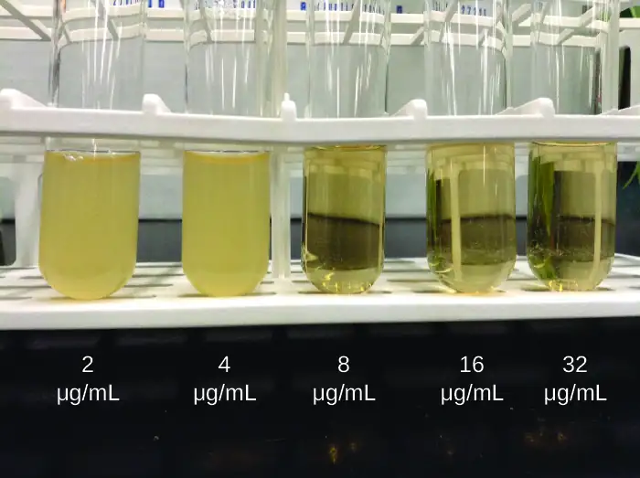
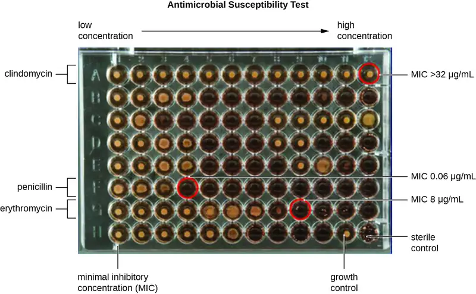
Check Your Understanding
- Compare and contrast MIC and MBC.
Clinical Focus: Resolution
Marisa’s UTI was likely caused by the catheterizations she had in Vietnam. Most bacteria that cause UTIs are members of the normal gut microbiota, but they can cause infections when introduced to the urinary tract, as might have occurred when the catheter was inserted. Alternatively, if the catheter itself was not sterile, bacteria on its surface could have been introduced into Marisa’s body. The antimicrobial therapy Marisa received in Cambodia may also have been a complicating factor because it may have selected for antimicrobial-resistant strains already present in her body. These bacteria would have already contained genes for antimicrobial resistance, either acquired by spontaneous mutation or through horizontal gene transfer, and, therefore, had the best evolutionary advantage for adaptation and growth in the presence of the antimicrobial therapy. As a result, one of these resistant strains may have been subsequently introduced into her urinary tract.
Laboratory testing at the CDC confirmed that the strain of Klebsiella pneumoniae from Marisa’s urine sample was positive for the presence of NDM, a very active carbapenemase that is beginning to emerge as a new problem in antimicrobial resistance. While NDM-positive strains are resistant to a wide range of antimicrobials, they have shown susceptibility to tigecycline (structurally related to tetracycline) and the polymyxins B and E (colistin).
To prevent her infection from spreading, Marisa was isolated from the other patients in a separate room. All hospital staff interacting with her were advised to follow strict protocols to prevent surface and equipment contamination. This would include especially stringent hand hygiene practices and careful disinfection of all items coming into contact with her.
Marisa’s infection finally responded to tigecycline and eventually cleared. She was discharged a few weeks after admission, and a follow-up stool sample showed her stool to be free of NDM-containing K. pneumoniae, meaning that she was no longer harboring the highly resistant bacterium.
Go back to the previous Clinical Focus box.
14.7 Current Strategies for Antimicrobial Discovery¶
Learning Objectives
By the end of this section, you will be able to:
- Describe the methods and strategies used for discovery of new antimicrobial agents.
With the continued evolution and spread of antimicrobial resistance, and now the identification of pan-resistant bacterial pathogens, the search for new antimicrobials is essential for preventing the postantibiotic era. Although development of more effective semisynthetic derivatives is one strategy, resistance to them develops rapidly because bacterial pathogens are already resistant to earlier-generation drugs in the family and can easily mutate and develop resistance to the new semisynthetic drugs. Today, scientists continue to hunt for new antimicrobial compounds and explore new avenues of antimicrobial discovery and synthesis. They check large numbers of soils and microbial products for antimicrobial activity by using high-throughput screening methods, which use automation to test large numbers of samples simultaneously. The recent development of the iChip26 allows researchers to investigate the antimicrobial-producing capabilities of soil microbes that are difficult to grow by standard cultivation techniques in the laboratory. Rather than grow the microbes in the laboratory, they are grown in situ—right in the soil. Use of the iChip has resulted in the discovery of teixobactin, a novel antimicrobial from Mount Ararat, Turkey. Teixobactin targets two distinct steps in gram-positive cell wall synthesis and for which antimicrobial resistance appears not yet to have evolved.
Although soils have been widely examined, other environmental niches have not been tested as fully. Since 70% of the earth is covered with water, marine environments could be mined more fully for the presence of antimicrobial-producing microbes. In addition, researchers are using combinatorial chemistry, a method for making a very large number of related compounds from simple precursors, and testing them for antimicrobial activity. An additional strategy that needs to be explored further is the development of compounds that inhibit resistance mechanisms and restore the activity of older drugs, such as the strategy described earlier for β-lactamase inhibitors like clavulanic acid. Finally, developing inhibitors of virulence factor production and function could be a very important avenue. Although this strategy would not be directly antibacterial, drugs that slow the progression of an infection could provide an advantage for the immune system and could be used successfully in combination with antimicrobial drugs.
Check Your Understanding
- What are new sources and strategies for developing drugs to fight infectious diseases?
Eye on Ethics: The (Free?) Market for New Antimicrobials
There used to be plenty of antimicrobial drugs on the market to treat infectious diseases. However, the spread of antimicrobial resistance has created a need for new antibiotics to replace those that are no longer as effective as they once were. Unfortunately, pharmaceutical companies are not particularly motivated to fill this need. As of 2009, all but five pharmaceutical companies had moved away from antimicrobial drug development.27 As a result, the number of FDA approvals of new antimicrobials has fallen drastically in recent decades (Figure 14.22).
Given that demand usually encourages supply, one might expect pharmaceutical companies to be rushing to get back in the business of developing new antibiotics. But developing new drugs is a lengthy process and requires large investments in research and development. Pharmaceutical companies can typically get a higher return on their investment by developing products for chronic, nonmicrobial diseases like diabetes; such drugs must be taken for life, and therefore generate more long-term revenue than an antibiotic that does its job in a week or two. But what will happen when drugs like vancomycin, a superantimicrobial reserved for use as a last resort, begin to lose their effectiveness against ever more drug-resistant superbugs? Will drug companies wait until all antibiotics have become useless before beginning to look for new ones?
Recently, it has been suggested that large pharmaceutical companies should be given financial incentives to pursue such research. In September 2014, the White House released an executive order entitled “Combating Antibiotic Resistant Bacteria,” calling upon various government agencies and the private sector to work together to “accelerate basic and applied research and development for new antimicrobials, other therapeutics, and vaccines.”28 As a result, as of March 2015, President Obama’s proposed fiscal year 2016 budget doubled the amount of federal funding to $1.2 billion for “combating and preventing antibiotic resistance,” which includes money for antimicrobial research and development.29 Similar suggestions have also been made on a global scale. In December 2014, a report chaired by former Goldman Sachs economist Jim O’Neill was published in The Review on Antimicrobial Resistance.30
These developments reflect the growing belief that for-profit pharmaceutical companies must be subsidized to encourage development of new antimicrobials. But some ask whether pharmaceutical development should be motivated by profit at all. Given that millions of lives may hang in the balance, some might argue that drug companies have an ethical obligation to devote their research and development efforts to high-utility drugs, as opposed to highly profitable ones. Yet this obligation conflicts with the fundamental goals of a for-profit company. Are government subsidies enough to ensure that drug companies make the public interest a priority, or should government agencies assume responsibility for developing critical drugs that may have little or no return on investment?
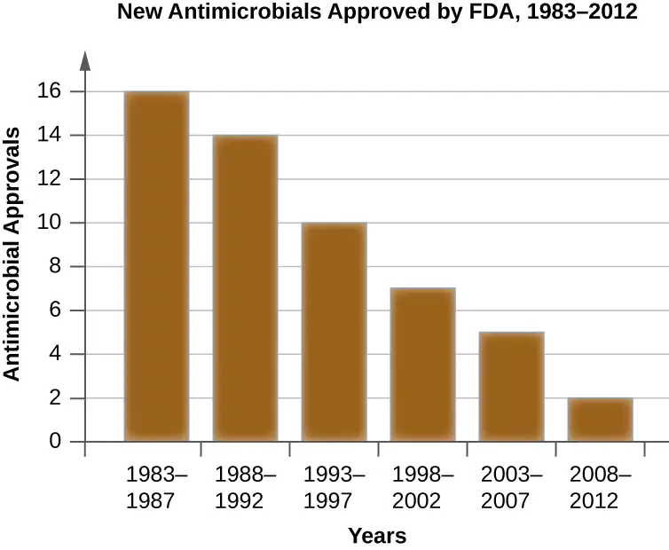
Link to Learning
To further examine the scope of the problem, view this video.
To learn more about the history of antimicrobial drug discovery, visit Michigan State University’s Antimicrobial Resistance Learning Site.
Chapter Review¶
Key Concepts and Summary¶
14.1 History of Chemotherapy and Antimicrobial Discovery¶
- Antimicrobial drugs produced by purposeful fermentation and/or contained in plants have been used as traditional medicines in many cultures for millennia.
- The purposeful and systematic search for a chemical “magic bullet” that specifically target infectious microbes was initiated by Paul Ehrlich in the early 20th century.
- The discovery of the natural antibiotic, penicillin, by Alexander Fleming in 1928 started the modern age of antimicrobial discovery and research.
- Sulfanilamide, the first synthetic antimicrobial, was discovered by Gerhard Domagk and colleagues and is a breakdown product of the synthetic dye, prontosil.
14.2 Fundamentals of Antimicrobial Chemotherapy¶
- Antimicrobial drugs can be bacteriostatic or bactericidal, and these characteristics are important considerations when selecting the most appropriate drug.
- The use of narrow-spectrum antimicrobial drugs is preferred in many cases to avoid superinfection and the development of antimicrobial resistance.
- Broad-spectrum antimicrobial use is warranted for serious systemic infections when there is no time to determine the causative agent, when narrow-spectrum antimicrobials fail, or for the treatment or prevention of infections with multiple types of microbes.
- The dosage and route of administration are important considerations when selecting an antimicrobial to treat and infection. Other considerations include the patient’s age, mass, ability to take oral medications, liver and kidney function, and possible interactions with other drugs the patient may be taking.
14.3 Mechanisms of Antibacterial Drugs¶
- Antibacterial compounds exhibit selective toxicity, largely due to differences between prokaryotic and eukaryotic cell structure.
- Cell wall synthesis inhibitors, including the β-lactams, the glycopeptides, and bacitracin, interfere with peptidoglycan synthesis, making bacterial cells more prone to osmotic lysis.
- There are a variety of broad-spectrum, bacterial protein synthesis inhibitors that selectively target the prokaryotic 70S ribosome, including those that bind to the 30S subunit (aminoglycosides and tetracyclines) and others that bind to the 50S subunit (macrolides, lincosamides, chloramphenicol, and oxazolidinones).
- Polymyxins are lipophilic polypeptide antibiotics that target the lipopolysaccharide component of gram-negative bacteria and ultimately disrupt the integrity of the outer and inner membranes of these bacteria.
- The nucleic acid synthesis inhibitors rifamycins and fluoroquinolones target bacterial RNA transcription and DNA replication, respectively.
- Some antibacterial drugs are antimetabolites, acting as competitive inhibitors for bacterial metabolic enzymes. Sulfonamides and trimethoprim are antimetabolites that interfere with bacterial folic acid synthesis. Isoniazid is an antimetabolite that interferes with mycolic acid synthesis in mycobacteria.
14.4 Mechanisms of Other Antimicrobial Drugs¶
- Because fungi, protozoans, and helminths are eukaryotic organisms like human cells, it is more challenging to develop antimicrobial drugs that specifically target them. Similarly, it is hard to target viruses because human viruses replicate inside of human cells.
- Antifungal drugs interfere with ergosterol synthesis, bind to ergosterol to disrupt fungal cell membrane integrity, or target cell wall-specific components or other cellular proteins.
- Antiprotozoan drugs increase cellular levels of reactive oxygen species, interfere with protozoal DNA replication (nuclear versus kDNA, respectively), and disrupt heme detoxification.
- Antihelminthic drugs disrupt helminthic and protozoan microtubule formation; block neuronal transmissions; inhibit anaerobic ATP formation and/or oxidative phosphorylation; induce a calcium influx in tapeworms, leading to spasms and paralysis; and interfere with RNA synthesis in schistosomes.
- Antiviral drugs inhibit viral entry, inhibit viral uncoating, inhibit nucleic acid biosynthesis, prevent viral escape from endosomes in host cells, and prevent viral release from infected cells.
- Because it can easily mutate to become drug resistant, HIV is typically treated with a combination of several antiretroviral drugs, which may include reverse transcriptase inhibitors, protease inhibitors, integrase inhibitors, and drugs that interfere with viral binding and fusion to initiate infection.
14.5 Drug Resistance¶
- Antimicrobial resistance is on the rise and is the result of selection of drug-resistant strains in clinical environments, the overuse and misuse of antibacterials, the use of subtherapeutic doses of antibacterial drugs, and poor patient compliance with antibacterial drug therapies.
- Drug resistance genes are often carried on plasmids or in transposons that can undergo vertical transfer easily and between microbes through horizontal gene transfer.
- Common modes of antimicrobial drug resistance include drug modification or inactivation, prevention of cellular uptake or efflux, target modification, target overproduction or enzymatic bypass, and target mimicry.
- Problematic microbial strains showing extensive antimicrobial resistance are emerging; many of these strains can reside as members of the normal microbiota in individuals but also can cause opportunistic infection. The transmission of many of these highly resistant microbial strains often occurs in clinical settings, but can also be community-acquired.
14.6 Testing the Effectiveness of Antimicrobials¶
- The Kirby-Bauer disk diffusion test helps determine the susceptibility of a microorganism to various antimicrobial drugs. However, the zones of inhibition measured must be correlated to known standards to determine susceptibility and resistance, and do not provide information on bactericidal versus bacteriostatic activity, or allow for direct comparison of drug potencies.
- Antibiograms are useful for monitoring local trends in antimicrobial resistance/susceptibility and for directing appropriate selection of empiric antibacterial therapy.
- There are several laboratory methods available for determining the minimum inhibitory concentration (MIC) of an antimicrobial drug against a specific microbe. The minimal bactericidal concentration (MBC) can also be determined, typically as a follow-up experiment to MIC determination using the tube dilution method.
14.7 Current Strategies for Antimicrobial Discovery¶
- Current research into the development of antimicrobial drugs involves the use of high-throughput screening and combinatorial chemistry technologies.
- New technologies are being developed to discover novel antibiotics from soil microorganisms that cannot be cultured by standard laboratory methods.
- Additional strategies include searching for antibiotics from sources other than soil, identifying new antibacterial targets, using combinatorial chemistry to develop novel drugs, developing drugs that inhibit resistance mechanisms, and developing drugs that target virulence factors and hold infections in check.
Multiple Choice¶
14.1 History of Chemotherapy and Antimicrobial Discovery¶
1. A scientist discovers that a soil bacterium he has been studying produces an antimicrobial that kills gram-negative bacteria. She isolates and purifies the antimicrobial compound, then chemically converts a chemical side chain to a hydroxyl group. When she tests the antimicrobial properties of this new version, she finds that this antimicrobial drug can now also kill gram-positive bacteria. The new antimicrobial drug with broad-spectrum activity is considered to be which of the following?
- resistant
- semisynthetic
- synthetic
- natural
Answer
B
2. Which of the following antimicrobial drugs is synthetic?
- sulfanilamide
- penicillin
- actinomycin
- neomycin
Answer
A
14.2 Fundamentals of Antimicrobial Chemotherapy¶
3. Which of the following combinations would most likely contribute to the development of a superinfection?
- long-term use of narrow-spectrum antimicrobials
- long-term use of broad-spectrum antimicrobials
- short-term use of narrow-spectrum antimicrobials
- short-term use of broad-spectrum antimicrobials
Answer
B
4. Which of the following routes of administration would be appropriate and convenient for home administration of an antimicrobial to treat a systemic infection?
- oral
- intravenous
- topical
- parenteral
Answer
A
5. Which clinical situation would be appropriate for treatment with a narrow-spectrum antimicrobial drug?
- treatment of a polymicrobic mixed infection in the intestine
- prophylaxis against infection after a surgical procedure
- treatment of strep throat caused by culture identified Streptococcus pyogenes
- empiric therapy of pneumonia while waiting for culture results
Answer
C
14.3 Mechanisms of Antibacterial Drugs¶
6. Which of the following terms refers to the ability of an antimicrobial drug to harm the target microbe without harming the host?
- mode of action
- therapeutic level
- spectrum of activity
- selective toxicity
Answer
D
7. Which of the following is not a type of β-lactam antimicrobial?
- penicillins
- glycopeptides
- cephalosporins
- monobactams
Answer
B
8. Which of the following does not bind to the 50S ribosomal subunit?
- tetracyclines
- lincosamides
- macrolides
- chloramphenicol
Answer
A
9. Which of the following antimicrobials inhibits the activity of DNA gyrase?
- polymyxin B
- clindamycin
- nalidixic acid
- rifampin
Answer
C
14.4 Mechanisms of Other Antimicrobial Drugs¶
10. Which of the following is not an appropriate target for antifungal drugs?
- ergosterol
- chitin
- cholesterol
- β(1→3) glucan
Answer
C
11. Which of the following drug classes specifically inhibits neuronal transmission in helminths?
- quinolines
- avermectins
- amantadines
- imidazoles
Answer
B
12. Which of the following is a nucleoside analog commonly used as a reverse transcriptase inhibitor in the treatment of HIV?
- acyclovir
- ribavirin
- adenine-arabinoside
- azidothymidine
Answer
D
13. Which of the following is an antimalarial drug that is thought to increase ROS levels in target cells?
- artemisinin
- amphotericin b
- praziquantel
- pleconaril
Answer
A
14.5 Drug Resistance¶
14. Which of the following resistance mechanisms describes the function of β-lactamase?
- efflux pump
- target mimicry
- drug inactivation
- target overproduction
Answer
C
15. Which of the following resistance mechanisms is commonly effective against a wide range of antimicrobials in multiple classes?
- efflux pump
- target mimicry
- target modification
- target overproduction
Answer
A
16. Which of the following resistance mechanisms is the most nonspecific to a particular class of antimicrobials?
- drug modification
- target mimicry
- target modification
- efflux pump
Answer
D
17. Which of the following types of drug-resistant bacteria do not typically persist in individuals as a member of their intestinal microbiota?
- MRSA
- VRE
- CRE
- ESBL-producing bacteria
Answer
A
14.6 Testing the Effectiveness of Antimicrobials¶
18. In the Kirby-Bauer disk diffusion test, the _______ of the zone of inhibition is measured and used for interpretation.
- diameter
- microbial population
- circumference
- depth
Answer
A
19. Which of the following techniques cannot be used to determine the minimum inhibitory concentration of an antimicrobial drug against a particular microbe?
- Etest
- microbroth dilution test
- Kirby-Bauer disk diffusion test
- macrobroth dilution test
Answer
C
20. The utility of an antibiogram is that it shows antimicrobial susceptibility trends
- over a large geographic area.
- for an individual patient.
- in research laboratory strains.
- in a localized population.
Answer
D
14.7 Current Strategies for Antimicrobial Discovery¶
21. Which of the following has yielded compounds with the most antimicrobial activity?
- water
- air
- volcanoes
- soil
Answer
D
Fill in the Blank¶
14.1 History of Chemotherapy and Antimicrobial Discovery¶
22. The group of soil bacteria known for their ability to produce a wide variety of antimicrobials is called the ________.
Answer
actinomycetes
14.2 Fundamentals of Antimicrobial Chemotherapy¶
23. The bacterium known for causing pseudomembranous colitis, a potentially deadly superinfection, is ________.
Answer
Clostridioides difficile
14.3 Mechanisms of Antibacterial Drugs¶
24. Selective toxicity antimicrobials are easier to develop against bacteria because they are ________ cells, whereas human cells are eukaryotic.
Answer
prokaryotic
14.4 Mechanisms of Other Antimicrobial Drugs¶
25. Antiviral drugs, like Tamiflu and Relenza, that are effective against the influenza virus by preventing viral escape from host cells are called ________.
Answer
neuraminidase inhibitors
14.5 Drug Resistance¶
26. Staphylococcus aureus, including MRSA strains, may commonly be carried as a normal member of the ________ microbiota in some people.
Answer
nasal
14.6 Testing the Effectiveness of Antimicrobials¶
27. The method that can determine the MICs of multiple antimicrobial drugs against a microbial strain using a single agar plate is called the ________.
Answer
Etest
Short Answer¶
14.1 History of Chemotherapy and Antimicrobial Discovery¶
28. Where do antimicrobials come from naturally? Why?
29. Why was Salvarsan considered to be a “magic bullet” for the treatment of syphilis?
14.2 Fundamentals of Antimicrobial Chemotherapy¶
30. When prescribing antibiotics, what aspects of the patient’s health history should the clinician ask about and why?
31. When is using a broad-spectrum antimicrobial drug warranted?
14.3 Mechanisms of Antibacterial Drugs¶
32. If human cells and bacterial cells perform transcription, how are the rifamycins specific for bacterial infections?
33. What bacterial structural target would make an antibacterial drug selective for gram-negative bacteria? Provide one example of an antimicrobial compound that targets this structure.
14.4 Mechanisms of Other Antimicrobial Drugs¶
34. How does the biology of HIV necessitate the need to treat HIV infections with multiple drugs?
35. Niclosamide is insoluble and thus is not readily absorbed from the stomach into the bloodstream. How does the insolubility of niclosamide aid its effectiveness as a treatment for tapeworm infection?
14.5 Drug Resistance¶
36. Why does the length of time of antimicrobial treatment for tuberculosis contribute to the rise of resistant strains?
37. What is the difference between multidrug resistance and cross-resistance?
14.6 Testing the Effectiveness of Antimicrobials¶
38. How is the information from a Kirby-Bauer disk diffusion test used for the recommendation of the clinical use of an antimicrobial drug?
39. What is the difference between MIC and MBC?
Critical Thinking¶
14.1 History of Chemotherapy and Antimicrobial Discovery¶
40. In nature, why do antimicrobial-producing microbes commonly also have antimicrobial resistance genes?
14.2 Fundamentals of Antimicrobial Chemotherapy¶
41. Why are yeast infections a common type of superinfection that results from long-term use of broad-spectrum antimicrobials?
42. Too often patients will stop taking antimicrobial drugs before the prescription is finished. What are factors that cause a patient to stop too soon, and what negative impacts could this have?
14.3 Mechanisms of Antibacterial Drugs¶
43. In considering the cell structure of prokaryotes compared with that of eukaryotes, propose one possible reason for side effects in humans due to treatment of bacterial infections with protein synthesis inhibitors.
14.4 Mechanisms of Other Antimicrobial Drugs¶
44. Which of the following molecules is an example of a nucleoside analog?
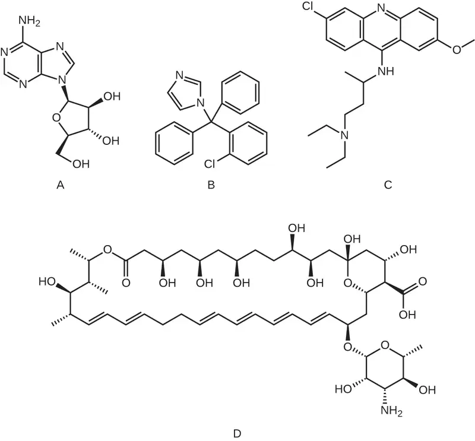
45. Why can’t drugs used to treat influenza, like amantadines and neuraminidase inhibitors, be used to treat a wider variety of viral infections?
14.6 Testing the Effectiveness of Antimicrobials¶
46. Can an Etest be used to find the MBC of a drug? Explain.
14.7 Current Strategies for Antimicrobial Discovery¶
47. Who should be responsible for discovering and developing new antibiotics? Support your answer with reasoning.
True/False¶
14.2 Fundamentals of Antimicrobial Chemotherapy¶
48. Narrow-spectrum antimicrobials are commonly used for prophylaxis following surgery.
Answer
False
14.3 Mechanisms of Antibacterial Drugs¶
49. β-lactamases can degrade vancomycin.
Answer
false
14.4 Mechanisms of Other Antimicrobial Drugs¶
50. Echinocandins, known as “penicillin for fungi,” target β(1→3) glucan in fungal cell walls.
Answer
true
14.6 Testing the Effectiveness of Antimicrobials¶
51. If drug A produces a larger zone of inhibition than drug B on the Kirby-Bauer disk diffusion test, drug A should always be prescribed.
Answer
false
14.7 Current Strategies for Antimicrobial Discovery¶
52. The rate of discovery of antimicrobial drugs has decreased significantly in recent decades.
Answer
true
Adapted from Microbiology by OpenStax, licensed under CC BY 4.0. Access the original for free at openstax.org. Changes: converted to the web reading format of The Open Book Project.
-
“Treatment of War Wounds: A Historical Review.” Clinical Orthopaedics and Related Research 467 no. 8 (2009):2168–2191. ↩
-
M.L. Nelson et al. “Brief Communication: Mass Spectroscopic Characterization of Tetracycline in the Skeletal Remains of an Ancient Population from Sudanese Nubia 350–550 CE.” American Journal of Physical Anthropology 143 no. 1 (2010):151–154. ↩
-
E. Hsu. "The history of qing hao in the Chinese materia medica." Transactions of The Royal Society of Tropical Medicine and Hygiene, Volume 100, Issue 6. (2006.) 505–508. ↩
-
M. Wainwright. “Moulds in Ancient and More Recent Medicine.” Mycologist 3 no. 1 (1989):21–23. ↩
-
S. Verma, S.P. Singh. “Current and Future Status of Herbal Medicines.” Veterinary World 1 no. 11 (2008):347–350. ↩
-
J. Berdy. “Bioactive Microbial Metabolites.” The Journal of Antibiotics 58 no. 1 (2005):1–26. ↩
-
M. Baltz. “Antimicrobials from Actinomycetes: Back to the Future.” Microbe 2 no. 3 (2007):125–131. ↩
-
M.E. Falagas, D.E. Karageorgopoulos. “Adjustment of Dosing of Antimicrobial Agents for Bodyweight in Adults.” The Lancet 375 no. 9710 (2010):248–251. ↩
-
B.D. Dickinson et al. “Drug Interactions between Oral Contraceptives and Antibiotics.” Obstetrics & Gynecology 98, no. 5 (2001):853–860. ↩
-
Centers for Disease Control and Prevention. “Tuberculosis (TB).” http://www.cdc.gov/tb/education/ssmodules/module9/ss9reading2.htm. Accessed June 2, 2016. ↩
-
World Health Organization. “Tuberculosis (TB): The Five Elements of DOTS.” http://www.who.int/tb/dots/whatisdots/en/. Accessed June 2, 2016. ↩
-
Vaz, L.E., et al. “Prevalence of Parental Misconceptions About Antibiotic Use.” Pediatrics 136 no.2 (August 2015). DOI: 10.1542/peds.2015-0883. ↩
-
Centers for Disease Control and Prevention. “Valley Fever: Awareness Is Key.” http://www.cdc.gov/features/valleyfever/. Accessed June 1, 2016. ↩
-
B. Chu et al. “A Benzimidazole Derivative Exhibiting Antitumor Activity Blocks EGFR and HER2 Activity and Upregulates DR5 in Breast Cancer Cells.” Cell Death and Disease 6 (2015):e1686 ↩
-
J.-X. Pan et al. “Niclosamide, An Old Antihelminthic Agent, Demonstrates Antitumor Activity by Blocking Multiple Signaling Pathways of Cancer Stem Cells.” Chinese Journal of Cancer 31 no. 4 (2012):178–184. ↩
-
F. Imperi et al. “New Life for an Old Drug: The Anthelmintic Drug Niclosamide Inhibits Pseudomonas aeruginosa Quorum Sensing.” Antimicrobial Agents and Chemotherapy 57 no. 2 (2013):996-1005. ↩
-
A. Jurgeit et al. “Niclosamide Is a Proton Carrier and Targets Acidic Endosomes with Broad Antiviral Effects.” PLoS Pathogens 8 no. 10 (2012):e1002976. ↩
-
M.J. Abzug. “The Enteroviruses: Problems in Need of Treatments.” Journal of Infection 68 no. S1 (2014):108–14. ↩
-
B.L. Pearlman. “Protease Inhibitors for the Treatment of Chronic Hepatitis C Genotype-1 Infection: The New Standard of Care.” Lancet Infectious Diseases 12 no. 9 (2012):717–728. ↩
-
Centers for Disease Control and Prevention. “Antibiotic/Antimicrobial Resistance.” http://www.cdc.gov/drugresistance/index.html. Accessed June 2, 2016. ↩
-
A.S. Kalokhe et al. “Multidrug-Resistant Tuberculosis Drug Susceptibility and Molecular Diagnostic Testing: A Review of the Literature. American Journal of the Medical Sciences 345 no. 2 (2013):143–148. ↩
-
Centers for Disease Control and Prevention. “Methicillin-Resistant Staphylococcus aureus (MRSA): General Information About MRSA in the Community.” http://www.cdc.gov/mrsa/community/index.html. Accessed June 2, 2016 ↩
-
F.D. Lowy. “Antimicrobial Resistance: The Example of Staphylococcus aureus.” Journal of Clinical Investigation 111 no. 9 (2003):1265–1273. ↩
-
Centers for Disease Control and Prevention. “Healthcare-Associated Infections (HIA): General Information about VISA/VRSA.” http://www.cdc.gov/HAI/organisms/visa_vrsa/visa_vrsa.html. Accessed June 2, 2016. ↩
-
J.P. Furuno et al. “Using Antibiograms to Improve Antibiotic Prescribing in Skilled Nursing Facilities.” Infection Control and Hospital Epidemiology 35 no. Suppl S3 (2014):S56–61. ↩
-
L. Losee et al. “A New Antibiotic Kills Pathogens Without Detectable Resistance.” Nature 517 no. 7535 (2015):455–459. ↩
-
H.W. Boucher et al. “Bad Bugs, No Drugs: No ESKAPE! An Update from the Infectious Diseases Society of America.” Clinical Infectious Diseases 48 no. 1 (2009):1–12. ↩
-
The White House. National Action Plan for Combating Antibiotic-Resistant Bacteria. Washington, DC: The White House, 2015. ↩
-
White House Office of the Press Secretary. “Fact Sheet: Obama Administration Releases National Action Plan to Combat Antibiotic-Resistant Bacteria.” March 27, 2015. https://www.whitehouse.gov/the-press-office/2015/03/27/fact-sheet-obama-administration-releases-national-action-plan-combat-ant ↩
-
Review on Antimicrobial Resistance. http://amr-review.org. Accessed June 1, 2016. ↩